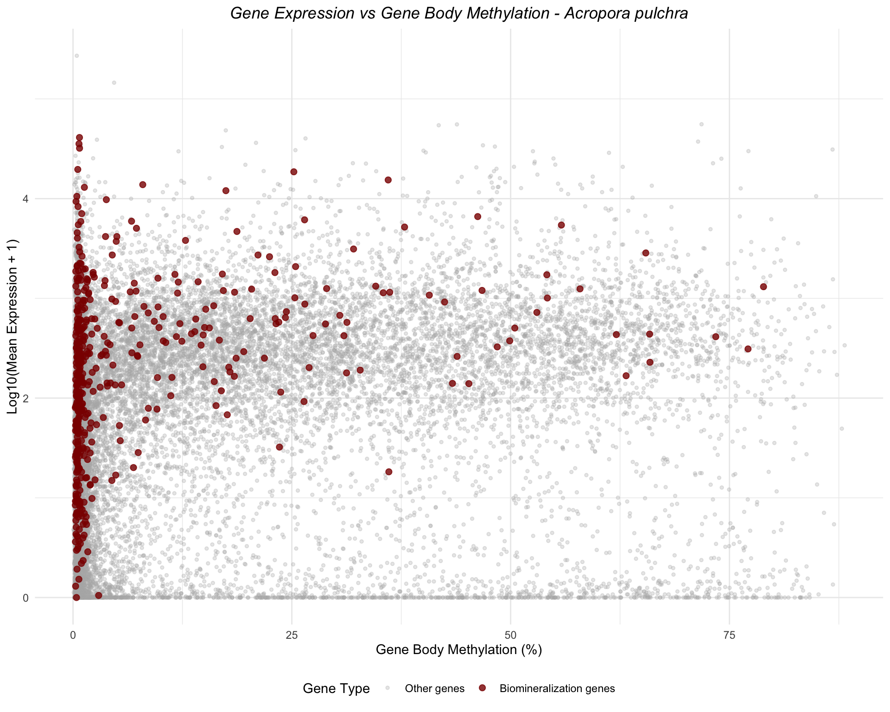
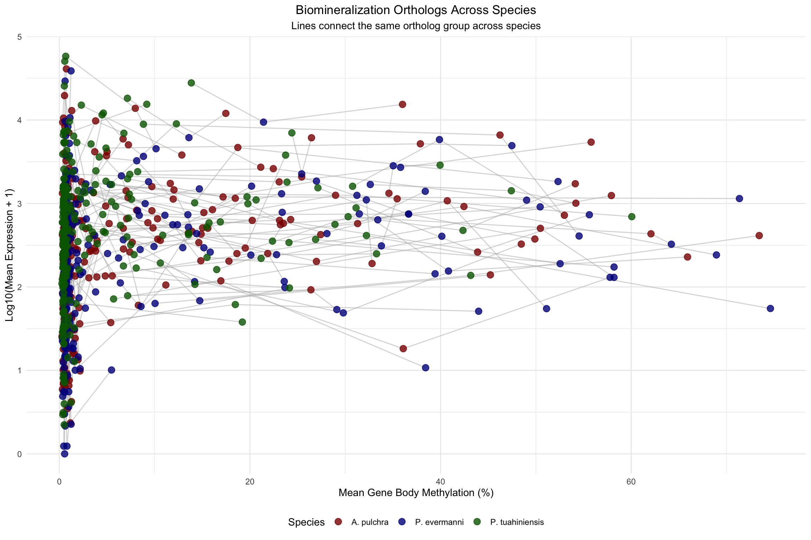
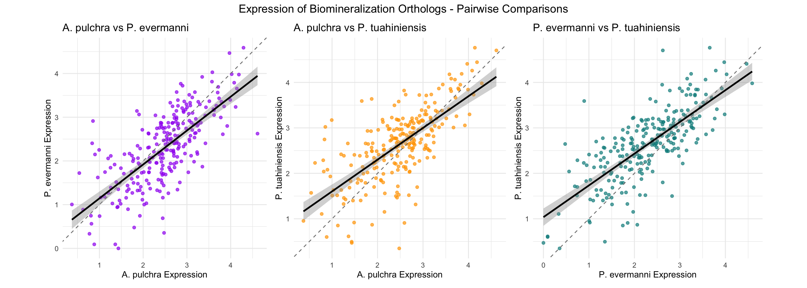

![]()
library(tidyverse)Overview
This script creates x-y plots of gene expression versus gene body methylation for three coral species: - Acropora pulchra - Porites evermanni - Pocillopora tuahiniensis
Biomineralization genes are highlighted in each plot.
Load Libraries
Load Data
Gene Expression Count Matrices
# Acropora pulchra
apul_expression <- read_csv("https://gannet.fish.washington.edu/gitrepos/urol-e5/timeseries_molecular/D-Apul/output/02.20-D-Apul-RNAseq-alignment-HiSat2/apul-gene_count_matrix.csv")
# Porites evermanni
peve_expression <- read_csv("https://gannet.fish.washington.edu/gitrepos/urol-e5/timeseries_molecular/E-Peve/output/02.20-E-Peve-RNAseq-alignment-HiSat2/peve-gene_count_matrix.csv")
# Pocillopora tuahiniensis
ptua_expression <- read_csv("https://gannet.fish.washington.edu/gitrepos/urol-e5/timeseries_molecular/F-Ptua/output/02.20-F-Ptua-RNAseq-alignment-HiSat2/ptua-gene_count_matrix.csv")Gene Body Methylation Data
# Acropora pulchra
apul_methylation <- read_tsv("https://raw.githubusercontent.com/urol-e5/timeseries-molecular-calcification/refs/heads/main/D-Apul/output/40-Apul-Gene-Methylation/Apul-gene-methylation_75pct.tsv")
# Porites evermanni
peve_methylation <- read_tsv("https://raw.githubusercontent.com/urol-e5/timeseries-molecular-calcification/refs/heads/main/E-Peve/output/15-Peve-Gene-Methylation/Peve-gene-methylation_75pct.tsv")
# Pocillopora tuahiniensis
ptua_methylation <- read_tsv("https://raw.githubusercontent.com/urol-e5/timeseries-molecular-calcification/refs/heads/main/F-Ptua/output/09-Ptua-Gene-Methylation/Ptua-gene-methylation_75pct.tsv")Biomineralization Gene Lists
# Acropora pulchra
apul_biomin <- read_csv("https://raw.githubusercontent.com/urol-e5/timeseries-molecular-calcification/refs/heads/main/M-multi-species/output/33-biomin-pathway-counts/apul_biomin_counts.csv")
# Porites evermanni
peve_biomin <- read_csv("https://raw.githubusercontent.com/urol-e5/timeseries-molecular-calcification/refs/heads/main/M-multi-species/output/33-biomin-pathway-counts/peve_biomin_counts.csv")
# Pocillopora tuahiniensis
ptua_biomin <- read_csv("https://raw.githubusercontent.com/urol-e5/timeseries-molecular-calcification/refs/heads/main/M-multi-species/output/33-biomin-pathway-counts/ptua_biomin_counts.csv")Data Preview
# Preview expression data structure
head(apul_expression)# A tibble: 6 × 41
gene_id `ACR-139-TP1` `ACR-139-TP2` `ACR-139-TP3` `ACR-139-TP4` `ACR-145-TP1`
<chr> <dbl> <dbl> <dbl> <dbl> <dbl>
1 FUN_002… 3 2 3 4 12
2 FUN_002… 0 1 0 0 0
3 FUN_002… 0 0 0 0 0
4 FUN_002… 10 5 10 10 23
5 FUN_002… 2 1 1 2 2
6 FUN_002… 12 7 10 10 26
# ℹ 35 more variables: `ACR-145-TP2` <dbl>, `ACR-145-TP3` <dbl>,
# `ACR-145-TP4` <dbl>, `ACR-150-TP1` <dbl>, `ACR-150-TP2` <dbl>,
# `ACR-150-TP3` <dbl>, `ACR-150-TP4` <dbl>, `ACR-173-TP1` <dbl>,
# `ACR-173-TP2` <dbl>, `ACR-173-TP3` <dbl>, `ACR-173-TP4` <dbl>,
# `ACR-186-TP1` <dbl>, `ACR-186-TP2` <dbl>, `ACR-186-TP3` <dbl>,
# `ACR-186-TP4` <dbl>, `ACR-225-TP1` <dbl>, `ACR-225-TP2` <dbl>,
# `ACR-225-TP3` <dbl>, `ACR-225-TP4` <dbl>, `ACR-229-TP1` <dbl>, …head(peve_expression)# A tibble: 6 × 39
gene_id `POR-216-TP1` `POR-216-TP2` `POR-216-TP3` `POR-216-TP4` `POR-236-TP1`
<chr> <dbl> <dbl> <dbl> <dbl> <dbl>
1 gene-Pe… 29 75 63 25 82
2 gene-Pe… 0 1 0 1 0
3 gene-Pe… 0 0 0 0 0
4 gene-Pe… 13 13 0 0 0
5 gene-Pe… 105 114 164 6 16
6 gene-Pe… 2 0 0 1 0
# ℹ 33 more variables: `POR-236-TP2` <dbl>, `POR-245-TP1` <dbl>,
# `POR-245-TP2` <dbl>, `POR-245-TP3` <dbl>, `POR-245-TP4` <dbl>,
# `POR-260-TP1` <dbl>, `POR-260-TP2` <dbl>, `POR-260-TP3` <dbl>,
# `POR-260-TP4` <dbl>, `POR-262-TP1` <dbl>, `POR-262-TP2` <dbl>,
# `POR-262-TP3` <dbl>, `POR-262-TP4` <dbl>, `POR-69-TP1` <dbl>,
# `POR-69-TP2` <dbl>, `POR-69-TP3` <dbl>, `POR-69-TP4` <dbl>,
# `POR-72-TP1` <dbl>, `POR-72-TP2` <dbl>, `POR-72-TP3` <dbl>, …head(ptua_expression)# A tibble: 6 × 40
gene_id `POC-201-TP1` `POC-201-TP2` `POC-201-TP3` `POC-219-TP1` `POC-219-TP2`
<chr> <dbl> <dbl> <dbl> <dbl> <dbl>
1 gene-Po… 54 170 18 168 31
2 gene-Po… 957 759 143 757 446
3 gene-Po… 249 452 381 501 218
4 gene-Po… 365 191 13 73 64
5 gene-Po… 187 435 137 754 332
6 gene-Po… 379 602 138 561 389
# ℹ 34 more variables: `POC-219-TP3` <dbl>, `POC-219-TP4` <dbl>,
# `POC-222-TP1` <dbl>, `POC-222-TP2` <dbl>, `POC-222-TP3` <dbl>,
# `POC-222-TP4` <dbl>, `POC-255-TP1` <dbl>, `POC-255-TP2` <dbl>,
# `POC-255-TP3` <dbl>, `POC-255-TP4` <dbl>, `POC-259-TP1` <dbl>,
# `POC-259-TP2` <dbl>, `POC-259-TP3` <dbl>, `POC-259-TP4` <dbl>,
# `POC-40-TP1` <dbl>, `POC-40-TP2` <dbl>, `POC-40-TP3` <dbl>,
# `POC-40-TP4` <dbl>, `POC-42-TP1` <dbl>, `POC-42-TP2` <dbl>, …# Preview methylation data structure
head(apul_methylation)# A tibble: 6 × 41
gene_id `ACR-139-TP1` `ACR-139-TP2` `ACR-139-TP3` `ACR-139-TP4` `ACR-145-TP1`
<chr> <dbl> <dbl> <dbl> <dbl> <dbl>
1 FUN_000… 2.16 1.23 0.491 1.34 0.649
2 FUN_000… 2.36 1.63 1.19 1.58 0.948
3 FUN_000… 0.179 0.648 0.183 0.0801 0.939
4 FUN_000… 0 0.222 0 0 NA
5 FUN_000… 0.5 0.231 0 0 0
6 FUN_000… 54.8 58.2 54.0 66.5 45.8
# ℹ 35 more variables: `ACR-145-TP2` <dbl>, `ACR-145-TP3` <dbl>,
# `ACR-145-TP4` <dbl>, `ACR-150-TP1` <dbl>, `ACR-150-TP2` <dbl>,
# `ACR-150-TP3` <dbl>, `ACR-150-TP4` <dbl>, `ACR-173-TP1` <dbl>,
# `ACR-173-TP2` <dbl>, `ACR-173-TP3` <dbl>, `ACR-173-TP4` <dbl>,
# `ACR-186-TP1` <dbl>, `ACR-186-TP2` <dbl>, `ACR-186-TP3` <dbl>,
# `ACR-186-TP4` <dbl>, `ACR-225-TP1` <dbl>, `ACR-225-TP2` <dbl>,
# `ACR-225-TP3` <dbl>, `ACR-225-TP4` <dbl>, `ACR-229-TP1` <dbl>, …head(peve_methylation)# A tibble: 6 × 38
gene_id `POR-216-TP1` `POR-216-TP2` `POR-216-TP3` `POR-216-TP4` `POR-236-TP1`
<chr> <dbl> <dbl> <dbl> <dbl> <dbl>
1 gene-Pe… 0.773 0.171 0.422 0.307 0.0893
2 gene-Pe… 0.400 0.485 0.873 0.670 0.775
3 gene-Pe… 0.492 0.535 0.793 0.386 0.554
4 gene-Pe… 2.21 0.487 1.01 4.62 1.91
5 gene-Pe… 27.0 29.8 29.0 33.1 8.23
6 gene-Pe… 12.7 19.2 19.0 22.5 21.6
# ℹ 32 more variables: `POR-236-TP2` <dbl>, `POR-245-TP1` <dbl>,
# `POR-245-TP2` <dbl>, `POR-245-TP3` <dbl>, `POR-245-TP4` <dbl>,
# `POR-260-TP1` <dbl>, `POR-260-TP2` <dbl>, `POR-260-TP3` <dbl>,
# `POR-260-TP4` <dbl>, `POR-262-TP1` <dbl>, `POR-262-TP2` <dbl>,
# `POR-262-TP3` <dbl>, `POR-262-TP4` <dbl>, `POR-69-TP1` <dbl>,
# `POR-69-TP2` <dbl>, `POR-69-TP3` <dbl>, `POR-69-TP4` <dbl>,
# `POR-72-TP1` <dbl>, `POR-72-TP2` <dbl>, `POR-72-TP3` <dbl>, …head(ptua_methylation)# A tibble: 6 × 33
gene_id `POC-201-TP1` `POC-201-TP2` `POC-219-TP1` `POC-219-TP2` `POC-219-TP3`
<chr> <dbl> <dbl> <dbl> <dbl> <dbl>
1 gene-Po… 55.9 65 NA 56.7 70.8
2 gene-Po… 62.1 64.3 57.9 58.0 63.0
3 gene-Po… 21.6 23.3 24.0 18.2 22.6
4 gene-Po… 0.281 0.146 0.433 0.159 0.338
5 gene-Po… 0.301 0 0 0.0916 0.394
6 gene-Po… 9.58 8.64 7.63 7.43 7.72
# ℹ 27 more variables: `POC-219-TP4` <dbl>, `POC-222-TP1` <dbl>,
# `POC-222-TP3` <dbl>, `POC-222-TP4` <dbl>, `POC-255-TP1` <dbl>,
# `POC-255-TP2` <dbl>, `POC-255-TP3` <dbl>, `POC-259-TP1` <dbl>,
# `POC-259-TP2` <dbl>, `POC-40-TP1` <dbl>, `POC-40-TP2` <dbl>,
# `POC-40-TP3` <dbl>, `POC-40-TP4` <dbl>, `POC-42-TP2` <dbl>,
# `POC-42-TP4` <dbl>, `POC-52-TP1` <dbl>, `POC-52-TP2` <dbl>,
# `POC-52-TP3` <dbl>, `POC-52-TP4` <dbl>, `POC-53-TP1` <dbl>, …# Preview biomin gene lists
head(apul_biomin)# A tibble: 6 × 42
group_id gene_id `ACR-139-TP1` `ACR-139-TP2` `ACR-139-TP3` `ACR-139-TP4`
<chr> <chr> <dbl> <dbl> <dbl> <dbl>
1 OG_13910 FUN_002435 16875 28318 32788 51133
2 OG_10516 FUN_002646 82 10 437 209
3 OG_13916 FUN_002648 75 67 101 67
4 OG_10520 FUN_002663 43 0 0 12
5 OG_10522 FUN_002671 7 4 17 0
6 OG_10523 FUN_002672 4618 3317 1903 2991
# ℹ 36 more variables: `ACR-145-TP1` <dbl>, `ACR-145-TP2` <dbl>,
# `ACR-145-TP3` <dbl>, `ACR-145-TP4` <dbl>, `ACR-150-TP1` <dbl>,
# `ACR-150-TP2` <dbl>, `ACR-150-TP3` <dbl>, `ACR-150-TP4` <dbl>,
# `ACR-173-TP1` <dbl>, `ACR-173-TP2` <dbl>, `ACR-173-TP3` <dbl>,
# `ACR-173-TP4` <dbl>, `ACR-186-TP1` <dbl>, `ACR-186-TP2` <dbl>,
# `ACR-186-TP3` <dbl>, `ACR-186-TP4` <dbl>, `ACR-225-TP1` <dbl>,
# `ACR-225-TP2` <dbl>, `ACR-225-TP3` <dbl>, `ACR-225-TP4` <dbl>, …head(peve_biomin)# A tibble: 6 × 40
group_id gene_id `POR-216-TP1` `POR-216-TP2` `POR-216-TP3` `POR-216-TP4`
<chr> <chr> <dbl> <dbl> <dbl> <dbl>
1 OG_08920 Peve_00000077 2201 1336 752 667
2 OG_08914 Peve_00000084 63 24 26 29
3 OG_12248 Peve_00013346 7 35 0 8
4 OG_11296 Peve_00022433 0 26 3 9
5 OG_03289 Peve_00022425 5 15 6 0
6 OG_03288 Peve_00022430 27 12 0 8
# ℹ 34 more variables: `POR-236-TP1` <dbl>, `POR-236-TP2` <dbl>,
# `POR-245-TP1` <dbl>, `POR-245-TP2` <dbl>, `POR-245-TP3` <dbl>,
# `POR-245-TP4` <dbl>, `POR-260-TP1` <dbl>, `POR-260-TP2` <dbl>,
# `POR-260-TP3` <dbl>, `POR-260-TP4` <dbl>, `POR-262-TP1` <dbl>,
# `POR-262-TP2` <dbl>, `POR-262-TP3` <dbl>, `POR-262-TP4` <dbl>,
# `POR-69-TP1` <dbl>, `POR-69-TP2` <dbl>, `POR-69-TP3` <dbl>,
# `POR-69-TP4` <dbl>, `POR-72-TP1` <dbl>, `POR-72-TP2` <dbl>, …head(ptua_biomin)# A tibble: 6 × 41
group_id gene_id `POC-201-TP1` `POC-201-TP2` `POC-201-TP3` `POC-219-TP1`
<chr> <chr> <dbl> <dbl> <dbl> <dbl>
1 OG_02619 Pocillopora_… 69 15 0 56
2 OG_02666 Pocillopora_… 5719 382 434 564
3 OG_03673 Pocillopora_… 1379 986 298 491
4 OG_03671 Pocillopora_… 12 827 286 35
5 OG_02537 Pocillopora_… 27 56 0 23
6 OG_17556 Pocillopora_… 11 12 0 4
# ℹ 35 more variables: `POC-219-TP2` <dbl>, `POC-219-TP3` <dbl>,
# `POC-219-TP4` <dbl>, `POC-222-TP1` <dbl>, `POC-222-TP2` <dbl>,
# `POC-222-TP3` <dbl>, `POC-222-TP4` <dbl>, `POC-255-TP1` <dbl>,
# `POC-255-TP2` <dbl>, `POC-255-TP3` <dbl>, `POC-255-TP4` <dbl>,
# `POC-259-TP1` <dbl>, `POC-259-TP2` <dbl>, `POC-259-TP3` <dbl>,
# `POC-259-TP4` <dbl>, `POC-40-TP1` <dbl>, `POC-40-TP2` <dbl>,
# `POC-40-TP3` <dbl>, `POC-40-TP4` <dbl>, `POC-42-TP1` <dbl>, …Prepare Data for Plotting
Acropora pulchra
# Calculate mean expression across samples for each gene
apul_expression_mean <- apul_expression %>%
pivot_longer(-gene_id, names_to = "sample", values_to = "count") %>%
group_by(gene_id) %>%
summarize(mean_expression = mean(count, na.rm = TRUE)) %>%
mutate(log_expression = log10(mean_expression + 1))
# Calculate mean methylation across samples for each gene
apul_methylation_mean <- apul_methylation %>%
pivot_longer(-gene_id, names_to = "sample", values_to = "methylation") %>%
group_by(gene_id) %>%
summarize(mean_methylation = mean(methylation, na.rm = TRUE))
# Join expression and methylation data
apul_combined <- apul_expression_mean %>%
inner_join(apul_methylation_mean, by = "gene_id")
# Get biomin gene IDs from the gene_id column (second column)
apul_biomin_genes <- apul_biomin %>%
pull(gene_id) %>%
unique()
# Check how many biomin genes we have
cat("Number of biomin genes:", length(apul_biomin_genes), "\n")Number of biomin genes: 505 cat("Sample biomin gene IDs:\n")Sample biomin gene IDs:head(apul_biomin_genes)[1] "FUN_002435" "FUN_002646" "FUN_002648" "FUN_002663" "FUN_002671"
[6] "FUN_002672"# Check for matches
cat("\nNumber of matches in combined data:", sum(apul_combined$gene_id %in% apul_biomin_genes), "\n")
Number of matches in combined data: 485 # Add biomin indicator
apul_combined <- apul_combined %>%
mutate(is_biomin = gene_id %in% apul_biomin_genes)
head(apul_combined)# A tibble: 6 × 5
gene_id mean_expression log_expression mean_methylation is_biomin
<chr> <dbl> <dbl> <dbl> <lgl>
1 FUN_000184 1836. 3.26 1.45 FALSE
2 FUN_000185 1545. 3.19 1.47 FALSE
3 FUN_000186 53.4 1.74 0.462 FALSE
4 FUN_000187 0.3 0.114 0.250 FALSE
5 FUN_000188 0.225 0.0881 0.428 FALSE
6 FUN_000189 1624. 3.21 54.6 FALSE table(apul_combined$is_biomin)
FALSE TRUE
21136 485 Porites evermanni
# Calculate mean expression across samples for each gene
peve_expression_mean <- peve_expression %>%
pivot_longer(-gene_id, names_to = "sample", values_to = "count") %>%
group_by(gene_id) %>%
summarize(mean_expression = mean(count, na.rm = TRUE)) %>%
mutate(log_expression = log10(mean_expression + 1))
# Calculate mean methylation across samples for each gene
peve_methylation_mean <- peve_methylation %>%
pivot_longer(-gene_id, names_to = "sample", values_to = "methylation") %>%
group_by(gene_id) %>%
summarize(mean_methylation = mean(methylation, na.rm = TRUE))
# Join expression and methylation data
peve_combined <- peve_expression_mean %>%
inner_join(peve_methylation_mean, by = "gene_id")
# Get biomin gene IDs - add "gene-" prefix to match expression data format
peve_biomin_genes <- peve_biomin %>%
pull(gene_id) %>%
unique() %>%
paste0("gene-", .)
# Check how many biomin genes we have
cat("Number of biomin genes:", length(peve_biomin_genes), "\n")Number of biomin genes: 565 cat("Sample biomin gene IDs (with prefix):\n")Sample biomin gene IDs (with prefix):head(peve_biomin_genes)[1] "gene-Peve_00000077" "gene-Peve_00000084" "gene-Peve_00013346"
[4] "gene-Peve_00022433" "gene-Peve_00022425" "gene-Peve_00022430"cat("\nSample expression gene IDs:\n")
Sample expression gene IDs:head(peve_combined$gene_id)[1] "gene-Peve_00000002" "gene-Peve_00000003" "gene-Peve_00000004"
[4] "gene-Peve_00000005" "gene-Peve_00000006" "gene-Peve_00000007"cat("\nNumber of matches in combined data:", sum(peve_combined$gene_id %in% peve_biomin_genes), "\n")
Number of matches in combined data: 483 # Add biomin indicator
peve_combined <- peve_combined %>%
mutate(is_biomin = gene_id %in% peve_biomin_genes)
head(peve_combined)# A tibble: 6 × 5
gene_id mean_expression log_expression mean_methylation is_biomin
<chr> <dbl> <dbl> <dbl> <lgl>
1 gene-Peve_00000002 5.74 0.828 54.6 FALSE
2 gene-Peve_00000003 56.1 1.76 56.4 FALSE
3 gene-Peve_00000004 212. 2.33 56.8 FALSE
4 gene-Peve_00000005 173. 2.24 64.7 FALSE
5 gene-Peve_00000006 2229. 3.35 62.7 FALSE
6 gene-Peve_00000007 142. 2.15 70.1 FALSE table(peve_combined$is_biomin)
FALSE TRUE
20341 483 Pocillopora tuahiniensis
# Calculate mean expression across samples for each gene
ptua_expression_mean <- ptua_expression %>%
pivot_longer(-gene_id, names_to = "sample", values_to = "count") %>%
group_by(gene_id) %>%
summarize(mean_expression = mean(count, na.rm = TRUE)) %>%
mutate(log_expression = log10(mean_expression + 1))
# Calculate mean methylation across samples for each gene
ptua_methylation_mean <- ptua_methylation %>%
pivot_longer(-gene_id, names_to = "sample", values_to = "methylation") %>%
group_by(gene_id) %>%
summarize(mean_methylation = mean(methylation, na.rm = TRUE))
# Join expression and methylation data
ptua_combined <- ptua_expression_mean %>%
inner_join(ptua_methylation_mean, by = "gene_id")
# Get biomin gene IDs - need to add "gene-" prefix to match expression data format
# Biomin IDs: Pocillopora_meandrina_HIv1___RNAseq.g21004.t1
# Expression IDs: gene-Pocillopora_meandrina_HIv1___RNAseq.g20905.t1
ptua_biomin_genes <- ptua_biomin %>%
pull(gene_id) %>%
unique() %>%
paste0("gene-", .)
# Check how many biomin genes we have
cat("Number of biomin genes:", length(ptua_biomin_genes), "\n")Number of biomin genes: 483 cat("Sample biomin gene IDs (with prefix):\n")Sample biomin gene IDs (with prefix):head(ptua_biomin_genes)[1] "gene-Pocillopora_meandrina_HIv1___TS.g25680.t1b"
[2] "gene-Pocillopora_meandrina_HIv1___RNAseq.g21004.t1"
[3] "gene-Pocillopora_meandrina_HIv1___RNAseq.g21081.t1"
[4] "gene-Pocillopora_meandrina_HIv1___RNAseq.g21079.t1"
[5] "gene-Pocillopora_meandrina_HIv1___TS.g26115.t1"
[6] "gene-Pocillopora_meandrina_HIv1___RNAseq.g21507.t1"cat("\nSample expression gene IDs:\n")
Sample expression gene IDs:head(ptua_combined$gene_id)[1] "gene-Pocillopora_meandrina_HIv1___RNAseq.10273_t"
[2] "gene-Pocillopora_meandrina_HIv1___RNAseq.10316_t"
[3] "gene-Pocillopora_meandrina_HIv1___RNAseq.10483_t"
[4] "gene-Pocillopora_meandrina_HIv1___RNAseq.10568_t"
[5] "gene-Pocillopora_meandrina_HIv1___RNAseq.10682_t"
[6] "gene-Pocillopora_meandrina_HIv1___RNAseq.10925_t"cat("\nNumber of matches in combined data:", sum(ptua_combined$gene_id %in% ptua_biomin_genes), "\n")
Number of matches in combined data: 459 # Add biomin indicator
ptua_combined <- ptua_combined %>%
mutate(is_biomin = gene_id %in% ptua_biomin_genes)
head(ptua_combined)# A tibble: 6 × 5
gene_id mean_expression log_expression mean_methylation is_biomin
<chr> <dbl> <dbl> <dbl> <lgl>
1 gene-Pocillopora_me… 25.3 1.42 1.03 FALSE
2 gene-Pocillopora_me… 109. 2.04 0.421 FALSE
3 gene-Pocillopora_me… 1700. 3.23 2.72 FALSE
4 gene-Pocillopora_me… 565. 2.75 0.474 FALSE
5 gene-Pocillopora_me… 30.1 1.49 0.357 FALSE
6 gene-Pocillopora_me… 980. 2.99 4.05 FALSE table(ptua_combined$is_biomin)
FALSE TRUE
22910 459 Create Plots
Acropora pulchra
ggplot(apul_combined, aes(x = mean_methylation, y = log_expression, color = is_biomin)) +
geom_point(data = filter(apul_combined, !is_biomin), alpha = 0.3, size = 1) +
geom_point(data = filter(apul_combined, is_biomin), alpha = 0.8, size = 2) +
scale_color_manual(values = c("FALSE" = "gray70", "TRUE" = "darkred"),
labels = c("FALSE" = "Other genes", "TRUE" = "Biomineralization genes"),
name = "Gene Type") +
labs(title = "Gene Expression vs Gene Body Methylation - Acropora pulchra",
x = "Gene Body Methylation (%)",
y = "Log10(Mean Expression + 1)") +
theme_minimal() +
theme(legend.position = "bottom",
plot.title = element_text(face = "italic", hjust = 0.5))
Porites evermanni
ggplot(peve_combined, aes(x = mean_methylation, y = log_expression, color = is_biomin)) +
geom_point(data = filter(peve_combined, !is_biomin), alpha = 0.3, size = 1) +
geom_point(data = filter(peve_combined, is_biomin), alpha = 0.8, size = 2) +
scale_color_manual(values = c("FALSE" = "gray70", "TRUE" = "darkblue"),
labels = c("FALSE" = "Other genes", "TRUE" = "Biomineralization genes"),
name = "Gene Type") +
labs(title = "Gene Expression vs Gene Body Methylation - Porites evermanni",
x = "Gene Body Methylation (%)",
y = "Log10(Mean Expression + 1)") +
theme_minimal() +
theme(legend.position = "bottom",
plot.title = element_text(face = "italic", hjust = 0.5))
Pocillopora tuahiniensis
ggplot(ptua_combined, aes(x = mean_methylation, y = log_expression, color = is_biomin)) +
geom_point(data = filter(ptua_combined, !is_biomin), alpha = 0.3, size = 1) +
geom_point(data = filter(ptua_combined, is_biomin), alpha = 0.8, size = 2) +
scale_color_manual(values = c("FALSE" = "gray70", "TRUE" = "darkgreen"),
labels = c("FALSE" = "Other genes", "TRUE" = "Biomineralization genes"),
name = "Gene Type") +
labs(title = "Gene Expression vs Gene Body Methylation - Pocillopora tuahiniensis",
x = "Gene Body Methylation (%)",
y = "Log10(Mean Expression + 1)") +
theme_minimal() +
theme(legend.position = "bottom",
plot.title = element_text(face = "italic", hjust = 0.5))
Combined Panel Plot
# Add species identifier to each dataset
apul_combined <- apul_combined %>% mutate(species = "Acropora pulchra")
peve_combined <- peve_combined %>% mutate(species = "Porites evermanni")
ptua_combined <- ptua_combined %>% mutate(species = "Pocillopora tuahiniensis")
# Combine all data
all_combined <- bind_rows(apul_combined, peve_combined, ptua_combined)
# Create faceted plot
ggplot(all_combined, aes(x = mean_methylation, y = log_expression, color = is_biomin)) +
geom_point(data = filter(all_combined, !is_biomin), alpha = 0.3, size = 1) +
geom_point(data = filter(all_combined, is_biomin), alpha = 0.8, size = 2) +
scale_color_manual(values = c("FALSE" = "gray70", "TRUE" = "darkred"),
labels = c("FALSE" = "Other genes", "TRUE" = "Biomineralization genes"),
name = "Gene Type") +
facet_wrap(~species, scales = "free_x") +
labs(title = "Gene Expression vs Gene Body Methylation",
x = "Gene Body Methylation (%)",
y = "Log10(Mean Expression + 1)") +
theme_minimal() +
theme(legend.position = "bottom",
strip.text = element_text(face = "italic", size = 12))
Summary Statistics
# Summary for each species
summary_stats <- all_combined %>%
group_by(species, is_biomin) %>%
summarize(
n_genes = n(),
avg_methylation = mean(mean_methylation, na.rm = TRUE),
sd_methylation = sd(mean_methylation, na.rm = TRUE),
avg_expression = mean(log_expression, na.rm = TRUE),
sd_expression = sd(log_expression, na.rm = TRUE),
.groups = "drop"
)
summary_stats %>%
knitr::kable(digits = 3,
col.names = c("Species", "Biomin Gene", "N", "Mean Meth", "SD Meth", "Mean Expr", "SD Expr"))| Species | Biomin Gene | N | Mean Meth | SD Meth | Mean Expr | SD Expr |
|---|---|---|---|---|---|---|
| Acropora pulchra | FALSE | 21136 | 15.675 | 20.938 | 1.782 | 0.999 |
| Acropora pulchra | TRUE | 485 | 7.052 | 13.575 | 2.250 | 0.855 |
| Pocillopora tuahiniensis | FALSE | 22910 | 7.470 | 11.702 | 1.788 | 0.956 |
| Pocillopora tuahiniensis | TRUE | 459 | 3.735 | 7.958 | 2.406 | 0.906 |
| Porites evermanni | FALSE | 20341 | 14.836 | 21.847 | 1.425 | 0.923 |
| Porites evermanni | TRUE | 483 | 6.711 | 14.332 | 1.974 | 0.930 |
Ortholog Comparison Across Species
This section compares biomineralization orthologs (same group_id) across the three species.
# Create biomin data with expression and methylation for each species
# Include group_id for ortholog matching
# Acropora pulchra biomin with expression/methylation
apul_biomin_data <- apul_biomin %>%
select(group_id, gene_id) %>%
inner_join(apul_expression_mean, by = "gene_id") %>%
inner_join(apul_methylation_mean, by = "gene_id") %>%
mutate(species = "A. pulchra") %>%
select(group_id, gene_id, species, mean_expression, log_expression, mean_methylation)
# Porites evermanni biomin with expression/methylation
# Need to add "gene-" prefix for matching
peve_biomin_data <- peve_biomin %>%
select(group_id, gene_id) %>%
mutate(gene_id_match = paste0("gene-", gene_id)) %>%
inner_join(peve_expression_mean, by = c("gene_id_match" = "gene_id")) %>%
inner_join(peve_methylation_mean, by = c("gene_id_match" = "gene_id")) %>%
mutate(species = "P. evermanni") %>%
select(group_id, gene_id = gene_id_match, species, mean_expression, log_expression, mean_methylation)
# Pocillopora tuahiniensis biomin with expression/methylation
# Need to add "gene-" prefix for matching
ptua_biomin_data <- ptua_biomin %>%
select(group_id, gene_id) %>%
mutate(gene_id_match = paste0("gene-", gene_id)) %>%
inner_join(ptua_expression_mean, by = c("gene_id_match" = "gene_id")) %>%
inner_join(ptua_methylation_mean, by = c("gene_id_match" = "gene_id")) %>%
mutate(species = "P. tuahiniensis") %>%
select(group_id, gene_id = gene_id_match, species, mean_expression, log_expression, mean_methylation)
# Combine all biomin data
all_biomin_orthologs <- bind_rows(apul_biomin_data, peve_biomin_data, ptua_biomin_data)
cat("Number of biomin genes per species:\n")Number of biomin genes per species:all_biomin_orthologs %>% count(species)# A tibble: 3 × 2
species n
<chr> <int>
1 A. pulchra 499
2 P. evermanni 483
3 P. tuahiniensis 459# Find orthologs present in all three species
orthologs_all_species <- all_biomin_orthologs %>%
group_by(group_id) %>%
summarize(n_species = n_distinct(species)) %>%
filter(n_species == 3) %>%
pull(group_id)
cat("\nNumber of ortholog groups present in all 3 species:", length(orthologs_all_species), "\n")
Number of ortholog groups present in all 3 species: 250 # Filter to only orthologs in all species
shared_orthologs <- all_biomin_orthologs %>%
filter(group_id %in% orthologs_all_species)
cat("\nShared ortholog groups:\n")
Shared ortholog groups:print(orthologs_all_species) [1] "OG_00030" "OG_00171" "OG_00176" "OG_00246" "OG_00297" "OG_00298"
[7] "OG_00302" "OG_00305" "OG_00314" "OG_00355" "OG_00378" "OG_00430"
[13] "OG_00460" "OG_00466" "OG_00510" "OG_00514" "OG_00572" "OG_00643"
[19] "OG_00752" "OG_00807" "OG_00842" "OG_00843" "OG_01023" "OG_01117"
[25] "OG_01121" "OG_01147" "OG_01155" "OG_01177" "OG_01223" "OG_01277"
[31] "OG_01312" "OG_01317" "OG_01353" "OG_01354" "OG_01384" "OG_01414"
[37] "OG_01452" "OG_01486" "OG_01489" "OG_01579" "OG_01608" "OG_01611"
[43] "OG_01630" "OG_01724" "OG_01727" "OG_01747" "OG_01748" "OG_01753"
[49] "OG_01758" "OG_01781" "OG_01981" "OG_01999" "OG_02000" "OG_02012"
[55] "OG_02088" "OG_02090" "OG_02102" "OG_02124" "OG_02146" "OG_02148"
[61] "OG_02149" "OG_02163" "OG_02176" "OG_02186" "OG_02219" "OG_02220"
[67] "OG_02260" "OG_02317" "OG_02358" "OG_02439" "OG_02537" "OG_02619"
[73] "OG_02666" "OG_02690" "OG_02924" "OG_02935" "OG_02967" "OG_03267"
[79] "OG_03268" "OG_03269" "OG_03270" "OG_03288" "OG_03289" "OG_03291"
[85] "OG_03298" "OG_03330" "OG_03429" "OG_03451" "OG_03484" "OG_03626"
[91] "OG_03628" "OG_03671" "OG_03673" "OG_03780" "OG_03850" "OG_03856"
[97] "OG_03857" "OG_04165" "OG_04238" "OG_04247" "OG_04327" "OG_04331"
[103] "OG_04372" "OG_04443" "OG_04514" "OG_04515" "OG_04537" "OG_04538"
[109] "OG_04547" "OG_04560" "OG_04651" "OG_04694" "OG_04698" "OG_04723"
[115] "OG_04756" "OG_04789" "OG_04799" "OG_05010" "OG_05087" "OG_05121"
[121] "OG_05228" "OG_05250" "OG_05304" "OG_05308" "OG_05366" "OG_05367"
[127] "OG_05498" "OG_05514" "OG_05568" "OG_05637" "OG_05666" "OG_05713"
[133] "OG_05717" "OG_05718" "OG_05749" "OG_05819" "OG_05856" "OG_05874"
[139] "OG_05875" "OG_05950" "OG_05952" "OG_06004" "OG_06101" "OG_06119"
[145] "OG_06152" "OG_06158" "OG_06181" "OG_06198" "OG_06234" "OG_06236"
[151] "OG_06247" "OG_06279" "OG_06373" "OG_06384" "OG_06592" "OG_06599"
[157] "OG_06607" "OG_06670" "OG_06711" "OG_06712" "OG_06717" "OG_06719"
[163] "OG_06754" "OG_06775" "OG_06875" "OG_06908" "OG_06922" "OG_06931"
[169] "OG_06954" "OG_06955" "OG_06998" "OG_07000" "OG_07042" "OG_07150"
[175] "OG_07153" "OG_07183" "OG_07252" "OG_07265" "OG_07330" "OG_07331"
[181] "OG_07389" "OG_07404" "OG_07508" "OG_07531" "OG_07620" "OG_07641"
[187] "OG_07772" "OG_07821" "OG_07822" "OG_07892" "OG_07958" "OG_08083"
[193] "OG_08096" "OG_08143" "OG_08144" "OG_08145" "OG_08192" "OG_08259"
[199] "OG_08271" "OG_08331" "OG_08347" "OG_08432" "OG_08497" "OG_08528"
[205] "OG_08545" "OG_08622" "OG_08639" "OG_08658" "OG_08663" "OG_08717"
[211] "OG_08768" "OG_08842" "OG_08849" "OG_08856" "OG_08874" "OG_08878"
[217] "OG_08914" "OG_08920" "OG_09003" "OG_09024" "OG_09106" "OG_09174"
[223] "OG_09247" "OG_09310" "OG_09424" "OG_09455" "OG_09486" "OG_09487"
[229] "OG_09511" "OG_09596" "OG_09597" "OG_09598" "OG_09638" "OG_09657"
[235] "OG_09806" "OG_09896" "OG_09897" "OG_09942" "OG_09969" "OG_09986"
[241] "OG_10002" "OG_10004" "OG_10007" "OG_10008" "OG_10039" "OG_10055"
[247] "OG_10109" "OG_10121" "OG_10183" "OG_10205"Ortholog Expression vs Methylation - Connected by Ortholog Group
# Plot with lines connecting orthologs across species
ggplot(shared_orthologs, aes(x = mean_methylation, y = log_expression, color = species)) +
geom_line(aes(group = group_id), color = "gray70", alpha = 0.5) +
geom_point(size = 3, alpha = 0.8) +
scale_color_manual(values = c("A. pulchra" = "darkred",
"P. evermanni" = "darkblue",
"P. tuahiniensis" = "darkgreen")) +
labs(title = "Biomineralization Orthologs Across Species",
subtitle = "Lines connect the same ortholog group across species",
x = "Mean Gene Body Methylation (%)",
y = "Log10(Mean Expression + 1)",
color = "Species") +
theme_minimal() +
theme(legend.position = "bottom",
plot.title = element_text(hjust = 0.5),
plot.subtitle = element_text(hjust = 0.5))
Pairwise Species Comparisons for Shared Orthologs
# Reshape data to wide format for pairwise comparisons
orthologs_wide <- shared_orthologs %>%
select(group_id, species, log_expression, mean_methylation) %>%
pivot_wider(names_from = species,
values_from = c(log_expression, mean_methylation),
names_sep = "_")
head(orthologs_wide)# A tibble: 6 × 7
group_id log_expression_A. pul…¹ log_expression_P. ev…² log_expression_P. tu…³
<chr> <dbl> <dbl> <dbl>
1 OG_00752 2.67 3.25 3.04
2 OG_00807 3.13 3.10 2.84
3 OG_00842 1.61 1.16 2.39
4 OG_00843 4.14 3.66 4.76
5 OG_01023 3.42 2.40 3.08
6 OG_01117 2.79 2.57 2.66
# ℹ abbreviated names: ¹`log_expression_A. pulchra`,
# ²`log_expression_P. evermanni`, ³`log_expression_P. tuahiniensis`
# ℹ 3 more variables: `mean_methylation_A. pulchra` <dbl>,
# `mean_methylation_P. evermanni` <dbl>,
# `mean_methylation_P. tuahiniensis` <dbl># Expression comparisons
p1 <- ggplot(orthologs_wide, aes(x = `log_expression_A. pulchra`, y = `log_expression_P. evermanni`)) +
geom_point(alpha = 0.7, color = "purple") +
geom_abline(slope = 1, intercept = 0, linetype = "dashed", color = "gray50") +
geom_smooth(method = "lm", se = TRUE, color = "black") +
labs(title = "A. pulchra vs P. evermanni",
x = "A. pulchra Expression",
y = "P. evermanni Expression") +
theme_minimal() +
coord_equal()
p2 <- ggplot(orthologs_wide, aes(x = `log_expression_A. pulchra`, y = `log_expression_P. tuahiniensis`)) +
geom_point(alpha = 0.7, color = "orange") +
geom_abline(slope = 1, intercept = 0, linetype = "dashed", color = "gray50") +
geom_smooth(method = "lm", se = TRUE, color = "black") +
labs(title = "A. pulchra vs P. tuahiniensis",
x = "A. pulchra Expression",
y = "P. tuahiniensis Expression") +
theme_minimal() +
coord_equal()
p3 <- ggplot(orthologs_wide, aes(x = `log_expression_P. evermanni`, y = `log_expression_P. tuahiniensis`)) +
geom_point(alpha = 0.7, color = "cyan4") +
geom_abline(slope = 1, intercept = 0, linetype = "dashed", color = "gray50") +
geom_smooth(method = "lm", se = TRUE, color = "black") +
labs(title = "P. evermanni vs P. tuahiniensis",
x = "P. evermanni Expression",
y = "P. tuahiniensis Expression") +
theme_minimal() +
coord_equal()
# Combine plots
library(patchwork)
p1 + p2 + p3 +
plot_annotation(title = "Expression of Biomineralization Orthologs - Pairwise Comparisons",
theme = theme(plot.title = element_text(hjust = 0.5, size = 14)))
# Methylation comparisons
m1 <- ggplot(orthologs_wide, aes(x = `mean_methylation_A. pulchra`, y = `mean_methylation_P. evermanni`)) +
geom_point(alpha = 0.7, color = "purple") +
geom_abline(slope = 1, intercept = 0, linetype = "dashed", color = "gray50") +
geom_smooth(method = "lm", se = TRUE, color = "black") +
labs(title = "A. pulchra vs P. evermanni",
x = "A. pulchra Methylation",
y = "P. evermanni Methylation") +
theme_minimal() +
coord_equal()
m2 <- ggplot(orthologs_wide, aes(x = `mean_methylation_A. pulchra`, y = `mean_methylation_P. tuahiniensis`)) +
geom_point(alpha = 0.7, color = "orange") +
geom_abline(slope = 1, intercept = 0, linetype = "dashed", color = "gray50") +
geom_smooth(method = "lm", se = TRUE, color = "black") +
labs(title = "A. pulchra vs P. tuahiniensis",
x = "A. pulchra Methylation",
y = "P. tuahiniensis Methylation") +
theme_minimal() +
coord_equal()
m3 <- ggplot(orthologs_wide, aes(x = `mean_methylation_P. evermanni`, y = `mean_methylation_P. tuahiniensis`)) +
geom_point(alpha = 0.7, color = "cyan4") +
geom_abline(slope = 1, intercept = 0, linetype = "dashed", color = "gray50") +
geom_smooth(method = "lm", se = TRUE, color = "black") +
labs(title = "P. evermanni vs P. tuahiniensis",
x = "P. evermanni Methylation",
y = "P. tuahiniensis Methylation") +
theme_minimal() +
coord_equal()
# Combine plots
m1 + m2 + m3 +
plot_annotation(title = "Methylation of Biomineralization Orthologs - Pairwise Comparisons",
theme = theme(plot.title = element_text(hjust = 0.5, size = 14)))
Correlation Statistics for Orthologs
cat("=== EXPRESSION CORRELATIONS ===\n\n")=== EXPRESSION CORRELATIONS ===cat("A. pulchra vs P. evermanni:\n")A. pulchra vs P. evermanni:cor_ap_pe_expr <- cor.test(orthologs_wide$`log_expression_A. pulchra`,
orthologs_wide$`log_expression_P. evermanni`,
use = "complete.obs")
cat(" r =", round(cor_ap_pe_expr$estimate, 3), ", p =", format(cor_ap_pe_expr$p.value, digits = 3), "\n\n") r = 0.72 , p = 3.67e-41 cat("A. pulchra vs P. tuahiniensis:\n")A. pulchra vs P. tuahiniensis:cor_ap_pt_expr <- cor.test(orthologs_wide$`log_expression_A. pulchra`,
orthologs_wide$`log_expression_P. tuahiniensis`,
use = "complete.obs")
cat(" r =", round(cor_ap_pt_expr$estimate, 3), ", p =", format(cor_ap_pt_expr$p.value, digits = 3), "\n\n") r = 0.691 , p = 7.32e-37 cat("P. evermanni vs P. tuahiniensis:\n")P. evermanni vs P. tuahiniensis:cor_pe_pt_expr <- cor.test(orthologs_wide$`log_expression_P. evermanni`,
orthologs_wide$`log_expression_P. tuahiniensis`,
use = "complete.obs")
cat(" r =", round(cor_pe_pt_expr$estimate, 3), ", p =", format(cor_pe_pt_expr$p.value, digits = 3), "\n\n") r = 0.745 , p = 1.84e-45 cat("=== METHYLATION CORRELATIONS ===\n\n")=== METHYLATION CORRELATIONS ===cat("A. pulchra vs P. evermanni:\n")A. pulchra vs P. evermanni:cor_ap_pe_meth <- cor.test(orthologs_wide$`mean_methylation_A. pulchra`,
orthologs_wide$`mean_methylation_P. evermanni`,
use = "complete.obs")
cat(" r =", round(cor_ap_pe_meth$estimate, 3), ", p =", format(cor_ap_pe_meth$p.value, digits = 3), "\n\n") r = 0.704 , p = 1.05e-38 cat("A. pulchra vs P. tuahiniensis:\n")A. pulchra vs P. tuahiniensis:cor_ap_pt_meth <- cor.test(orthologs_wide$`mean_methylation_A. pulchra`,
orthologs_wide$`mean_methylation_P. tuahiniensis`,
use = "complete.obs")
cat(" r =", round(cor_ap_pt_meth$estimate, 3), ", p =", format(cor_ap_pt_meth$p.value, digits = 3), "\n\n") r = 0.7 , p = 3.69e-38 cat("P. evermanni vs P. tuahiniensis:\n")P. evermanni vs P. tuahiniensis:cor_pe_pt_meth <- cor.test(orthologs_wide$`mean_methylation_P. evermanni`,
orthologs_wide$`mean_methylation_P. tuahiniensis`,
use = "complete.obs")
cat(" r =", round(cor_pe_pt_meth$estimate, 3), ", p =", format(cor_pe_pt_meth$p.value, digits = 3), "\n") r = 0.665 , p = 3.17e-33 Ortholog Summary Table
# Create a summary table of all shared orthologs
ortholog_summary <- orthologs_wide %>%
mutate(
expr_range = pmax(`log_expression_A. pulchra`, `log_expression_P. evermanni`, `log_expression_P. tuahiniensis`, na.rm = TRUE) -
pmin(`log_expression_A. pulchra`, `log_expression_P. evermanni`, `log_expression_P. tuahiniensis`, na.rm = TRUE),
meth_range = pmax(`mean_methylation_A. pulchra`, `mean_methylation_P. evermanni`, `mean_methylation_P. tuahiniensis`, na.rm = TRUE) -
pmin(`mean_methylation_A. pulchra`, `mean_methylation_P. evermanni`, `mean_methylation_P. tuahiniensis`, na.rm = TRUE)
) %>%
arrange(desc(expr_range))
cat("Shared biomineralization orthologs (sorted by expression variability across species):\n\n")Shared biomineralization orthologs (sorted by expression variability across species):ortholog_summary %>%
knitr::kable(digits = 2)| group_id | log_expression_A. pulchra | log_expression_P. evermanni | log_expression_P. tuahiniensis | mean_methylation_A. pulchra | mean_methylation_P. evermanni | mean_methylation_P. tuahiniensis | expr_range | meth_range |
|---|---|---|---|---|---|---|---|---|
| OG_02967 | 1.65 | 0.90 | 3.59 | 1.32 | 0.50 | 0.35 | 2.69 | 0.97 |
| OG_08096 | 0.99 | 2.25 | 3.17 | 2.17 | 0.75 | 0.84 | 2.18 | 1.42 |
| OG_01121 | 0.85 | 2.91 | 3.02 | 0.43 | 8.21 | 5.48 | 2.17 | 7.78 |
| OG_06234 | 1.79 | 0.48 | 2.65 | 0.64 | 0.54 | 0.34 | 2.17 | 0.30 |
| OG_05250 | 2.48 | 0.35 | 0.35 | 0.73 | 1.23 | 0.51 | 2.13 | 0.72 |
| OG_09596 | 4.61 | 2.62 | 4.70 | 0.73 | 0.60 | 0.57 | 2.08 | 0.17 |
| OG_06712 | 0.83 | 2.40 | 2.75 | 0.43 | 0.57 | 0.56 | 1.91 | 0.14 |
| OG_06101 | 1.87 | 2.35 | 3.64 | 0.58 | 6.21 | 0.78 | 1.77 | 5.63 |
| OG_07772 | 2.45 | 0.69 | 1.71 | 1.71 | 0.35 | 0.48 | 1.76 | 1.36 |
| OG_00643 | 2.59 | 1.85 | 0.91 | 0.71 | 0.69 | 0.40 | 1.68 | 0.31 |
| OG_06711 | 0.63 | 0.89 | 2.23 | 1.27 | 0.57 | 0.37 | 1.60 | 0.89 |
| OG_08849 | 0.81 | 0.75 | 2.29 | 0.58 | 0.43 | 0.42 | 1.54 | 0.16 |
| OG_03288 | 2.45 | 1.16 | 2.70 | 0.93 | 1.97 | 0.89 | 1.54 | 1.08 |
| OG_08914 | 2.84 | 1.51 | 1.32 | 0.64 | 0.57 | 0.46 | 1.52 | 0.18 |
| OG_04514 | 3.35 | 1.87 | 3.01 | 0.77 | 2.06 | 0.42 | 1.48 | 1.64 |
| OG_06908 | 0.82 | 0.56 | 2.04 | 1.00 | 0.98 | 0.27 | 1.48 | 0.73 |
| OG_03429 | 2.38 | 1.31 | 2.77 | 0.66 | 0.69 | 0.31 | 1.47 | 0.38 |
| OG_02163 | 2.78 | 1.34 | 2.56 | 1.54 | 0.59 | 0.47 | 1.44 | 1.07 |
| OG_09638 | 1.43 | 0.00 | 0.47 | 0.50 | 0.55 | 0.36 | 1.43 | 0.19 |
| OG_05304 | 2.02 | 1.00 | 2.41 | 11.17 | 1.66 | 0.42 | 1.41 | 10.75 |
| OG_06119 | 3.82 | 2.61 | 3.95 | 46.24 | 54.54 | 8.82 | 1.34 | 45.72 |
| OG_07331 | 2.40 | 2.83 | 1.50 | 0.54 | 0.96 | 0.38 | 1.33 | 0.57 |
| OG_02537 | 2.58 | 1.26 | 2.15 | 1.21 | 1.44 | 0.49 | 1.31 | 0.95 |
| OG_08331 | 1.35 | 1.92 | 2.66 | 0.48 | 0.75 | 0.48 | 1.31 | 0.27 |
| OG_07508 | 3.03 | 1.74 | 2.53 | 40.71 | 51.12 | 24.09 | 1.29 | 27.03 |
| OG_01747 | 1.86 | 3.14 | 2.93 | 0.67 | 0.55 | 0.50 | 1.29 | 0.17 |
| OG_02924 | 1.36 | 0.09 | 0.61 | 0.48 | 0.79 | 1.22 | 1.27 | 0.74 |
| OG_07153 | 0.90 | 2.15 | 2.08 | 0.84 | 2.20 | 0.40 | 1.25 | 1.80 |
| OG_03780 | 2.76 | 1.96 | 3.21 | 5.22 | 0.63 | 0.46 | 1.25 | 4.76 |
| OG_04372 | 1.87 | 1.32 | 2.57 | 1.04 | 1.46 | 0.78 | 1.25 | 0.68 |
| OG_10055 | 3.16 | 1.98 | 3.23 | 12.02 | 0.93 | 5.48 | 1.24 | 11.10 |
| OG_08842 | 2.58 | 2.78 | 3.82 | 1.12 | 0.66 | 0.41 | 1.24 | 0.70 |
| OG_00842 | 1.61 | 1.16 | 2.39 | 0.49 | 0.78 | 0.35 | 1.23 | 0.43 |
| OG_06373 | 1.42 | 0.95 | 2.18 | 0.42 | 0.53 | 0.77 | 1.23 | 0.35 |
| OG_05666 | 1.20 | 2.06 | 2.42 | 1.43 | 0.77 | 0.61 | 1.22 | 0.81 |
| OG_07958 | 2.01 | 1.75 | 2.96 | 0.46 | 2.72 | 0.38 | 1.21 | 2.35 |
| OG_03270 | 2.35 | 1.57 | 2.78 | 0.85 | 1.13 | 0.38 | 1.20 | 0.75 |
| OG_08528 | 1.88 | 2.06 | 0.87 | 0.96 | 0.44 | 0.51 | 1.20 | 0.52 |
| OG_08145 | 1.75 | 1.27 | 2.45 | 2.05 | 1.32 | 0.60 | 1.19 | 1.45 |
| OG_03850 | 0.54 | 1.72 | 1.57 | 0.84 | 0.68 | 0.49 | 1.18 | 0.35 |
| OG_02186 | 1.92 | 0.74 | 1.70 | 0.74 | 0.98 | 0.46 | 1.18 | 0.52 |
| OG_02146 | 2.87 | 1.99 | 1.70 | 0.50 | 0.95 | 0.42 | 1.18 | 0.53 |
| OG_00246 | 2.69 | 2.24 | 1.52 | 0.98 | 0.88 | 0.49 | 1.17 | 0.49 |
| OG_10183 | 1.91 | 3.06 | 2.22 | 0.47 | 0.52 | 0.66 | 1.16 | 0.19 |
| OG_09174 | 1.78 | 2.05 | 2.93 | 8.28 | 6.40 | 1.21 | 1.15 | 7.07 |
| OG_01579 | 1.26 | 2.11 | 2.39 | 36.09 | 57.79 | 7.83 | 1.13 | 49.95 |
| OG_08545 | 2.37 | 2.76 | 3.50 | 1.20 | 0.87 | 1.31 | 1.12 | 0.44 |
| OG_00510 | 3.92 | 2.80 | 3.05 | 0.57 | 0.81 | 0.43 | 1.12 | 0.38 |
| OG_00355 | 2.47 | 2.47 | 3.58 | 19.51 | 15.16 | 23.74 | 1.11 | 8.58 |
| OG_01177 | 2.62 | 3.33 | 3.73 | 3.56 | 0.88 | 0.47 | 1.11 | 3.09 |
| OG_00843 | 4.14 | 3.66 | 4.76 | 7.97 | 10.14 | 0.67 | 1.11 | 9.48 |
| OG_01147 | 3.24 | 2.16 | 2.35 | 11.64 | 39.42 | 15.49 | 1.08 | 27.78 |
| OG_02000 | 2.11 | 2.30 | 3.18 | 3.10 | 0.77 | 0.40 | 1.07 | 2.70 |
| OG_08083 | 1.74 | 1.59 | 2.66 | 0.37 | 0.64 | 1.37 | 1.07 | 0.99 |
| OG_08874 | 2.72 | 1.85 | 2.90 | 1.28 | 0.92 | 0.85 | 1.05 | 0.43 |
| OG_07330 | 2.07 | 1.03 | 1.86 | 16.94 | 38.43 | 5.69 | 1.04 | 32.74 |
| OG_02690 | 2.42 | 1.73 | 2.77 | 0.89 | 0.46 | 0.41 | 1.04 | 0.48 |
| OG_08663 | 1.99 | 1.26 | 2.29 | 0.74 | 0.71 | 0.48 | 1.03 | 0.27 |
| OG_08717 | 2.47 | 1.44 | 1.53 | 3.70 | 0.51 | 0.43 | 1.03 | 3.28 |
| OG_09024 | 3.23 | 2.20 | 2.81 | 0.88 | 0.93 | 0.53 | 1.03 | 0.40 |
| OG_01781 | 2.44 | 2.15 | 3.18 | 0.80 | 0.57 | 0.78 | 1.03 | 0.23 |
| OG_01023 | 3.42 | 2.40 | 3.08 | 1.03 | 0.65 | 0.55 | 1.02 | 0.48 |
| OG_03289 | 1.98 | 1.11 | 2.13 | 0.77 | 1.45 | 0.73 | 1.02 | 0.72 |
| OG_06875 | 1.92 | 1.33 | 2.34 | 0.91 | 0.63 | 0.37 | 1.01 | 0.54 |
| OG_03626 | 2.41 | 1.56 | 2.57 | 0.42 | 0.51 | 0.39 | 1.01 | 0.12 |
| OG_02439 | 2.12 | 2.63 | 3.13 | 3.93 | 0.62 | 0.48 | 1.01 | 3.45 |
| OG_04515 | 1.88 | 1.48 | 2.49 | 1.23 | 0.84 | 0.47 | 1.01 | 0.76 |
| OG_01727 | 2.15 | 1.97 | 1.15 | 1.22 | 0.55 | 0.87 | 1.00 | 0.67 |
| OG_04537 | 2.32 | 1.33 | 2.02 | 0.41 | 0.52 | 0.36 | 0.99 | 0.16 |
| OG_04651 | 2.95 | 2.17 | 3.15 | 1.14 | 0.45 | 0.59 | 0.98 | 0.69 |
| OG_03298 | 3.10 | 2.12 | 2.34 | 57.92 | 1.03 | 21.17 | 0.98 | 56.90 |
| OG_09942 | 2.65 | 1.77 | 2.74 | 13.53 | 8.57 | 6.41 | 0.97 | 7.12 |
| OG_08768 | 0.96 | 1.62 | 1.93 | 0.81 | 1.06 | 0.47 | 0.97 | 0.59 |
| OG_01223 | 2.22 | 2.08 | 3.04 | 0.72 | 0.68 | 0.49 | 0.97 | 0.24 |
| OG_03484 | 2.43 | 1.50 | 1.46 | 3.81 | 0.76 | 0.38 | 0.97 | 3.43 |
| OG_00314 | 3.85 | 3.25 | 4.19 | 0.99 | 0.61 | 9.17 | 0.94 | 8.56 |
| OG_05717 | 1.43 | 1.35 | 0.50 | 0.42 | 0.33 | 0.40 | 0.94 | 0.10 |
| OG_10002 | 3.62 | 3.16 | 4.08 | 3.71 | 3.28 | 4.62 | 0.92 | 1.34 |
| OG_02935 | 1.49 | 1.83 | 2.41 | 1.18 | 0.68 | 0.47 | 0.92 | 0.72 |
| OG_03673 | 2.31 | 2.75 | 3.23 | 14.84 | 11.89 | 3.77 | 0.91 | 11.07 |
| OG_03451 | 2.86 | 3.77 | 3.21 | 52.99 | 39.88 | 30.77 | 0.91 | 22.22 |
| OG_07265 | 1.13 | 1.74 | 0.85 | 1.96 | 0.77 | 0.52 | 0.89 | 1.44 |
| OG_07822 | 1.41 | 0.94 | 1.83 | 0.27 | 0.87 | 0.37 | 0.89 | 0.60 |
| OG_10007 | 4.11 | 3.23 | 3.73 | 1.30 | 2.77 | 1.83 | 0.88 | 1.48 |
| OG_02317 | 3.77 | 2.99 | 3.87 | 6.68 | 1.67 | 0.85 | 0.88 | 5.84 |
| OG_02102 | 2.13 | 1.74 | 2.62 | 4.81 | 74.61 | 32.22 | 0.87 | 69.80 |
| OG_05950 | 1.87 | 1.64 | 2.49 | 0.58 | 0.53 | 0.68 | 0.86 | 0.15 |
| OG_03268 | 2.43 | 1.82 | 1.58 | 0.54 | 1.26 | 19.20 | 0.85 | 18.66 |
| OG_05087 | 2.71 | 1.93 | 2.78 | 0.44 | 0.37 | 0.46 | 0.85 | 0.09 |
| OG_06384 | 2.52 | 2.25 | 3.08 | 1.10 | 1.80 | 1.17 | 0.83 | 0.70 |
| OG_00297 | 1.94 | 1.41 | 2.23 | 1.07 | 0.79 | 0.37 | 0.82 | 0.70 |
| OG_01277 | 2.51 | 1.69 | 2.23 | 48.47 | 29.80 | 8.06 | 0.82 | 40.41 |
| OG_01353 | 2.12 | 2.62 | 1.80 | 0.39 | 0.78 | 1.76 | 0.82 | 1.37 |
| OG_04238 | 2.90 | 3.72 | 2.95 | 1.33 | 1.06 | 0.87 | 0.82 | 0.46 |
| OG_08432 | 2.62 | 1.80 | 2.14 | 73.44 | 10.04 | 43.17 | 0.81 | 63.40 |
| OG_10008 | 2.76 | 3.57 | 2.86 | 1.50 | 1.06 | 1.57 | 0.81 | 0.51 |
| OG_06279 | 2.92 | 3.14 | 3.72 | 8.10 | 2.51 | 0.52 | 0.80 | 7.58 |
| OG_08271 | 2.56 | 2.41 | 3.21 | 10.59 | 0.94 | 2.68 | 0.80 | 9.65 |
| OG_05010 | 2.16 | 1.37 | 1.56 | 0.47 | 0.72 | 0.94 | 0.79 | 0.47 |
| OG_01753 | 0.88 | 0.09 | 0.60 | 1.04 | 0.46 | 0.50 | 0.79 | 0.58 |
| OG_05819 | 1.67 | 1.35 | 2.14 | 0.62 | 0.49 | 0.41 | 0.79 | 0.21 |
| OG_10039 | 2.31 | 1.95 | 2.74 | 0.80 | 0.58 | 0.57 | 0.79 | 0.24 |
| OG_03856 | 1.00 | 0.74 | 1.51 | 0.40 | 0.56 | 1.56 | 0.77 | 1.16 |
| OG_00302 | 0.77 | 0.33 | 1.11 | 0.32 | 0.62 | 1.58 | 0.77 | 1.26 |
| OG_06599 | 2.42 | 2.86 | 3.19 | 43.89 | 55.61 | 27.13 | 0.77 | 28.48 |
| OG_09003 | 1.89 | 1.95 | 2.66 | 0.98 | 0.67 | 0.57 | 0.77 | 0.41 |
| OG_08920 | 2.28 | 3.04 | 2.72 | 32.81 | 32.21 | 15.46 | 0.76 | 17.36 |
| OG_07183 | 2.24 | 2.21 | 2.97 | 1.11 | 1.15 | 0.46 | 0.76 | 0.69 |
| OG_01155 | 3.62 | 3.05 | 3.81 | 5.01 | 2.21 | 1.50 | 0.76 | 3.51 |
| OG_06931 | 2.36 | 2.19 | 2.95 | 65.91 | 40.83 | 31.13 | 0.76 | 34.78 |
| OG_09986 | 2.44 | 1.68 | 2.38 | 3.34 | 1.63 | 2.65 | 0.76 | 1.72 |
| OG_05568 | 2.46 | 1.71 | 2.15 | 0.71 | 0.54 | 0.53 | 0.76 | 0.18 |
| OG_08144 | 1.98 | 2.71 | 2.49 | 0.68 | 0.57 | 0.42 | 0.73 | 0.25 |
| OG_06152 | 3.43 | 3.23 | 3.95 | 21.13 | 5.32 | 12.28 | 0.73 | 15.81 |
| OG_03671 | 4.02 | 3.98 | 3.30 | 0.44 | 0.59 | 0.47 | 0.73 | 0.15 |
| OG_04723 | 2.80 | 2.28 | 3.00 | 23.10 | 52.55 | 19.78 | 0.72 | 32.76 |
| OG_09310 | 2.27 | 2.53 | 2.98 | 0.72 | 0.66 | 0.48 | 0.71 | 0.25 |
| OG_00430 | 2.47 | 3.01 | 3.17 | 1.59 | 0.85 | 0.60 | 0.70 | 0.99 |
| OG_05749 | 2.94 | 3.36 | 2.67 | 0.90 | 0.66 | 0.63 | 0.69 | 0.27 |
| OG_01724 | 2.78 | 2.09 | 2.34 | 0.76 | 0.71 | 0.49 | 0.69 | 0.27 |
| OG_03267 | 2.62 | 1.94 | 2.09 | 0.32 | 3.80 | 0.31 | 0.68 | 3.49 |
| OG_02666 | 3.28 | 2.70 | 3.38 | 0.63 | 0.57 | 1.40 | 0.68 | 0.82 |
| OG_09598 | 3.60 | 3.18 | 3.86 | 0.50 | 0.86 | 0.46 | 0.67 | 0.39 |
| OG_10004 | 2.70 | 2.11 | 2.03 | 50.47 | 58.20 | 14.23 | 0.67 | 43.98 |
| OG_06607 | 2.71 | 2.40 | 2.04 | 15.03 | 5.06 | 0.53 | 0.67 | 14.50 |
| OG_09896 | 3.67 | 3.26 | 3.01 | 18.73 | 52.33 | 14.20 | 0.66 | 38.13 |
| OG_03269 | 3.17 | 2.53 | 3.19 | 0.49 | 0.86 | 0.44 | 0.66 | 0.43 |
| OG_01354 | 3.15 | 2.83 | 2.50 | 7.00 | 0.74 | 0.39 | 0.65 | 6.61 |
| OG_07389 | 2.92 | 2.33 | 2.27 | 0.57 | 0.46 | 0.39 | 0.65 | 0.18 |
| OG_04331 | 2.13 | 1.48 | 1.99 | 0.46 | 0.74 | 24.14 | 0.65 | 23.68 |
| OG_00466 | 2.76 | 3.15 | 2.50 | 31.30 | 38.40 | 7.49 | 0.64 | 30.91 |
| OG_01630 | 3.07 | 3.33 | 3.71 | 7.20 | 6.51 | 3.32 | 0.64 | 3.88 |
| OG_08259 | 2.13 | 1.74 | 2.38 | 1.68 | 0.69 | 0.40 | 0.64 | 1.27 |
| OG_04799 | 2.79 | 3.39 | 2.75 | 2.48 | 0.79 | 0.54 | 0.64 | 1.95 |
| OG_05228 | 0.37 | 1.00 | 0.95 | 1.16 | 5.47 | 0.43 | 0.63 | 5.04 |
| OG_02358 | 2.55 | 2.25 | 2.88 | 0.43 | 0.72 | 0.46 | 0.63 | 0.28 |
| OG_07892 | 3.06 | 2.45 | 2.62 | 18.46 | 8.48 | 10.84 | 0.61 | 9.98 |
| OG_04443 | 2.82 | 2.32 | 2.21 | 7.06 | 1.97 | 2.06 | 0.61 | 5.09 |
| OG_01384 | 1.77 | 1.99 | 2.38 | 0.43 | 0.55 | 0.42 | 0.61 | 0.13 |
| OG_02088 | 4.29 | 4.59 | 3.98 | 0.54 | 1.22 | 1.05 | 0.61 | 0.68 |
| OG_04538 | 3.12 | 2.71 | 2.51 | 0.32 | 0.67 | 0.67 | 0.61 | 0.36 |
| OG_07150 | 2.42 | 1.98 | 2.59 | 7.39 | 1.15 | 0.41 | 0.61 | 6.98 |
| OG_07821 | 1.03 | 1.16 | 1.63 | 0.55 | 0.56 | 0.55 | 0.60 | 0.01 |
| OG_09969 | 2.71 | 2.98 | 2.38 | 0.54 | 0.67 | 0.68 | 0.60 | 0.14 |
| OG_05637 | 1.74 | 2.12 | 1.52 | 0.53 | 0.50 | 0.69 | 0.60 | 0.18 |
| OG_09806 | 3.58 | 4.03 | 4.18 | 12.85 | 1.11 | 2.31 | 0.60 | 11.74 |
| OG_05875 | 3.99 | 3.40 | 3.84 | 3.80 | 1.60 | 6.77 | 0.59 | 5.17 |
| OG_04756 | 1.25 | 1.85 | 1.33 | 0.41 | 0.76 | 0.46 | 0.59 | 0.35 |
| OG_04698 | 1.57 | 2.15 | 1.87 | 5.39 | 1.04 | 0.47 | 0.58 | 4.92 |
| OG_08658 | 2.96 | 2.38 | 2.75 | 42.45 | 68.95 | 28.92 | 0.58 | 40.03 |
| OG_00752 | 2.67 | 3.25 | 3.04 | 0.63 | 0.69 | 0.43 | 0.58 | 0.25 |
| OG_02176 | 2.30 | 1.96 | 2.53 | 2.63 | 0.67 | 0.50 | 0.57 | 2.13 |
| OG_01486 | 3.35 | 3.92 | 3.87 | 0.91 | 0.90 | 0.52 | 0.57 | 0.39 |
| OG_01414 | 1.49 | 1.02 | 0.92 | 1.59 | 2.18 | 0.45 | 0.57 | 1.73 |
| OG_02220 | 2.77 | 2.44 | 3.00 | 9.29 | 1.24 | 2.82 | 0.57 | 8.05 |
| OG_00572 | 3.06 | 2.49 | 2.57 | 35.45 | 33.79 | 26.89 | 0.56 | 8.56 |
| OG_09657 | 3.20 | 2.64 | 3.13 | 9.70 | 28.08 | 2.68 | 0.56 | 25.39 |
| OG_00171 | 3.24 | 2.80 | 2.68 | 54.14 | 33.41 | 42.35 | 0.56 | 20.72 |
| OG_06592 | 2.42 | 2.78 | 2.98 | 3.18 | 1.83 | 1.04 | 0.56 | 2.14 |
| OG_04247 | 3.10 | 2.88 | 2.54 | 28.98 | 1.63 | 1.95 | 0.55 | 27.35 |
| OG_09597 | 3.18 | 3.57 | 3.73 | 0.58 | 0.68 | 0.58 | 0.55 | 0.11 |
| OG_05366 | 2.73 | 2.59 | 3.14 | 0.52 | 1.20 | 0.44 | 0.55 | 0.76 |
| OG_06236 | 2.45 | 1.90 | 2.07 | 1.89 | 1.04 | 0.42 | 0.55 | 1.47 |
| OG_03330 | 3.18 | 2.63 | 2.97 | 0.91 | 1.18 | 0.52 | 0.55 | 0.66 |
| OG_07042 | 2.45 | 2.06 | 2.60 | 6.72 | 14.19 | 7.09 | 0.54 | 7.47 |
| OG_00030 | 2.13 | 1.99 | 2.52 | 5.55 | 23.67 | 3.97 | 0.52 | 19.70 |
| OG_01999 | 2.08 | 1.56 | 1.84 | 0.65 | 0.74 | 0.43 | 0.52 | 0.31 |
| OG_02260 | 2.70 | 2.18 | 2.57 | 2.77 | 2.44 | 0.57 | 0.52 | 2.20 |
| OG_06247 | 1.78 | 1.50 | 2.02 | 0.49 | 1.57 | 0.52 | 0.52 | 1.08 |
| OG_02012 | 2.31 | 2.61 | 2.82 | 26.97 | 40.13 | 7.25 | 0.52 | 32.88 |
| OG_09455 | 3.05 | 3.51 | 3.56 | 11.94 | 8.12 | 4.18 | 0.50 | 7.77 |
| OG_10205 | 3.08 | 2.58 | 2.84 | 1.28 | 0.52 | 0.53 | 0.50 | 0.77 |
| OG_08639 | 3.70 | 3.56 | 4.06 | 7.24 | 8.82 | 4.48 | 0.50 | 4.35 |
| OG_09247 | 3.97 | 4.47 | 4.41 | 0.34 | 0.60 | 0.52 | 0.49 | 0.26 |
| OG_05952 | 2.42 | 2.18 | 2.67 | 0.87 | 0.73 | 0.84 | 0.49 | 0.14 |
| OG_05121 | 3.79 | 3.36 | 3.85 | 26.46 | 25.43 | 24.39 | 0.49 | 2.06 |
| OG_06719 | 2.48 | 2.66 | 2.97 | 0.51 | 0.98 | 0.56 | 0.48 | 0.47 |
| OG_02149 | 1.69 | 2.17 | 1.99 | 0.42 | 0.67 | 0.37 | 0.48 | 0.30 |
| OG_02124 | 3.74 | 3.43 | 3.26 | 55.80 | 35.80 | 23.88 | 0.48 | 31.92 |
| OG_05713 | 2.69 | 2.21 | 2.64 | 0.63 | 1.13 | 0.45 | 0.48 | 0.68 |
| OG_08347 | 3.32 | 2.87 | 3.35 | 25.43 | 36.64 | 7.39 | 0.48 | 29.25 |
| OG_06754 | 2.40 | 2.88 | 2.77 | 18.63 | 31.47 | 15.70 | 0.48 | 15.77 |
| OG_05874 | 4.08 | 3.79 | 4.26 | 17.46 | 13.59 | 7.14 | 0.47 | 10.32 |
| OG_04560 | 4.19 | 3.97 | 4.44 | 36.01 | 21.42 | 13.84 | 0.47 | 22.16 |
| OG_05514 | 2.80 | 3.26 | 3.10 | 2.13 | 9.36 | 0.78 | 0.47 | 8.58 |
| OG_03291 | 2.61 | 2.62 | 3.07 | 1.36 | 3.71 | 2.18 | 0.46 | 2.35 |
| OG_06775 | 2.15 | 2.07 | 2.53 | 0.56 | 0.69 | 0.39 | 0.45 | 0.31 |
| OG_06198 | 3.06 | 2.92 | 3.37 | 1.79 | 1.08 | 0.71 | 0.45 | 1.08 |
| OG_06158 | 2.14 | 1.84 | 2.29 | 45.23 | 14.73 | 10.60 | 0.45 | 34.63 |
| OG_10121 | 2.53 | 2.57 | 2.97 | 7.64 | 6.71 | 5.90 | 0.43 | 1.74 |
| OG_05308 | 2.82 | 2.39 | 2.63 | 10.30 | 22.79 | 13.55 | 0.43 | 12.49 |
| OG_00298 | 1.20 | 1.27 | 1.63 | 1.56 | 0.57 | 0.94 | 0.43 | 0.99 |
| OG_01317 | 2.98 | 2.74 | 3.17 | 1.15 | 1.41 | 0.43 | 0.43 | 0.98 |
| OG_01489 | 2.97 | 3.18 | 3.39 | 4.86 | 14.69 | 3.83 | 0.42 | 10.86 |
| OG_06670 | 3.26 | 2.84 | 3.04 | 2.30 | 0.79 | 20.64 | 0.42 | 19.85 |
| OG_07620 | 2.76 | 2.96 | 2.55 | 23.51 | 50.45 | 22.36 | 0.41 | 28.09 |
| OG_02619 | 1.11 | 1.18 | 1.52 | 0.38 | 0.62 | 0.48 | 0.40 | 0.24 |
| OG_06998 | 3.57 | 3.81 | 3.41 | 4.93 | 0.65 | 0.47 | 0.40 | 4.47 |
| OG_03857 | 1.64 | 1.44 | 1.84 | 0.61 | 0.43 | 1.06 | 0.40 | 0.63 |
| OG_00176 | 1.30 | 1.03 | 1.43 | 0.69 | 0.48 | 1.10 | 0.40 | 0.61 |
| OG_08497 | 2.63 | 2.24 | 2.25 | 14.87 | 58.20 | 6.72 | 0.39 | 51.48 |
| OG_01608 | 2.76 | 3.00 | 3.15 | 0.56 | 9.00 | 1.96 | 0.39 | 8.44 |
| OG_07404 | 2.67 | 2.87 | 3.05 | 13.91 | 13.48 | 7.57 | 0.38 | 6.34 |
| OG_04327 | 3.42 | 3.04 | 3.38 | 22.45 | 49.03 | 8.22 | 0.38 | 40.82 |
| OG_04547 | 2.70 | 3.06 | 3.08 | 15.58 | 71.36 | 19.69 | 0.38 | 55.79 |
| OG_00378 | 1.46 | 1.10 | 1.40 | 0.85 | 0.42 | 0.33 | 0.36 | 0.52 |
| OG_07252 | 1.93 | 2.28 | 2.11 | 0.61 | 0.51 | 0.55 | 0.35 | 0.11 |
| OG_05856 | 2.76 | 2.41 | 2.68 | 0.64 | 1.82 | 0.54 | 0.35 | 1.29 |
| OG_08143 | 2.50 | 2.76 | 2.84 | 0.38 | 1.07 | 0.37 | 0.34 | 0.70 |
| OG_05718 | 2.93 | 3.12 | 3.27 | 16.07 | 23.32 | 4.89 | 0.34 | 18.43 |
| OG_07641 | 3.12 | 3.45 | 3.46 | 34.58 | 35.03 | 39.95 | 0.34 | 5.37 |
| OG_00460 | 1.92 | 1.91 | 2.25 | 0.34 | 0.37 | 0.43 | 0.34 | 0.09 |
| OG_00305 | 2.40 | 2.07 | 2.21 | 21.87 | 23.60 | 16.51 | 0.33 | 7.09 |
| OG_04694 | 2.64 | 2.51 | 2.84 | 62.08 | 64.22 | 30.30 | 0.33 | 33.92 |
| OG_07531 | 1.63 | 1.31 | 1.40 | 1.31 | 0.72 | 0.47 | 0.32 | 0.84 |
| OG_09486 | 2.89 | 3.21 | 3.14 | 15.16 | 20.17 | 3.56 | 0.32 | 16.61 |
| OG_01981 | 2.99 | 3.30 | 2.99 | 1.96 | 1.71 | 0.42 | 0.31 | 1.54 |
| OG_07000 | 3.51 | 3.37 | 3.21 | 0.69 | 0.91 | 0.41 | 0.30 | 0.50 |
| OG_01748 | 1.38 | 1.52 | 1.68 | 1.66 | 0.50 | 0.40 | 0.30 | 1.26 |
| OG_09424 | 2.57 | 2.87 | 2.87 | 49.89 | 36.65 | 4.55 | 0.30 | 45.34 |
| OG_08878 | 3.26 | 3.35 | 3.55 | 23.07 | 1.25 | 0.97 | 0.30 | 22.10 |
| OG_02219 | 2.71 | 2.42 | 2.66 | 9.82 | 15.83 | 3.47 | 0.29 | 12.36 |
| OG_01611 | 2.51 | 2.38 | 2.67 | 0.38 | 0.58 | 0.45 | 0.29 | 0.20 |
| OG_06922 | 2.46 | 2.74 | 2.49 | 0.70 | 0.56 | 0.82 | 0.29 | 0.25 |
| OG_00807 | 3.13 | 3.10 | 2.84 | 3.58 | 31.22 | 60.07 | 0.29 | 56.48 |
| OG_04789 | 3.20 | 2.96 | 2.94 | 0.43 | 0.50 | 0.63 | 0.26 | 0.20 |
| OG_01758 | 2.13 | 2.31 | 2.39 | 0.45 | 0.85 | 0.44 | 0.26 | 0.40 |
| OG_06004 | 2.91 | 2.86 | 3.11 | 9.71 | 11.07 | 7.34 | 0.25 | 3.73 |
| OG_08622 | 3.04 | 3.08 | 3.30 | 1.76 | 0.95 | 0.51 | 0.25 | 1.26 |
| OG_06954 | 1.97 | 1.73 | 1.89 | 26.39 | 29.11 | 7.16 | 0.24 | 21.95 |
| OG_00514 | 1.56 | 1.71 | 1.79 | 2.14 | 44.00 | 18.46 | 0.23 | 41.86 |
| OG_02148 | 2.37 | 2.15 | 2.22 | 0.66 | 0.95 | 0.86 | 0.22 | 0.29 |
| OG_01452 | 3.00 | 3.23 | 3.15 | 54.19 | 32.63 | 47.43 | 0.22 | 21.57 |
| OG_01117 | 2.79 | 2.57 | 2.66 | 0.51 | 0.70 | 0.40 | 0.22 | 0.30 |
| OG_09487 | 3.08 | 3.27 | 3.30 | 17.17 | 26.98 | 7.16 | 0.22 | 19.82 |
| OG_09106 | 2.57 | 2.50 | 2.71 | 10.32 | 3.02 | 3.09 | 0.21 | 7.30 |
| OG_06717 | 2.80 | 2.86 | 2.65 | 20.24 | 8.38 | 4.81 | 0.21 | 15.43 |
| OG_01312 | 2.67 | 2.87 | 2.77 | 0.70 | 0.91 | 0.65 | 0.20 | 0.26 |
| OG_09897 | 1.26 | 1.39 | 1.46 | 0.98 | 0.30 | 0.32 | 0.20 | 0.67 |
| OG_06955 | 2.53 | 2.48 | 2.66 | 14.63 | 9.93 | 4.62 | 0.18 | 10.01 |
| OG_05498 | 2.63 | 2.47 | 2.65 | 27.42 | 12.95 | 13.57 | 0.17 | 14.47 |
| OG_04165 | 2.75 | 2.89 | 2.78 | 23.20 | 23.39 | 16.89 | 0.15 | 6.50 |
| OG_02090 | 2.79 | 2.82 | 2.90 | 0.75 | 2.83 | 0.39 | 0.11 | 2.44 |
| OG_08856 | 2.70 | 2.72 | 2.81 | 6.71 | 13.54 | 1.62 | 0.10 | 11.92 |
| OG_05367 | 3.30 | 3.29 | 3.21 | 1.40 | 0.77 | 0.66 | 0.09 | 0.73 |
| OG_09511 | 2.81 | 2.75 | 2.72 | 24.27 | 12.38 | 2.46 | 0.09 | 21.81 |
| OG_10109 | 2.31 | 2.38 | 2.40 | 17.79 | 20.09 | 33.28 | 0.09 | 15.49 |
| OG_03628 | 2.55 | 2.64 | 2.58 | 3.96 | 14.40 | 3.12 | 0.08 | 11.28 |
| OG_08192 | 1.73 | 1.75 | 1.79 | 0.48 | 0.55 | 0.38 | 0.06 | 0.17 |
| OG_06181 | 3.72 | 3.69 | 3.66 | 37.88 | 47.48 | 4.89 | 0.05 | 42.59 |
Data Validation
This section verifies that for each species, a given point in the plot truly represents the same gene from both the expression and methylation datasets.
Acropora pulchra - Validation
# Pick a random gene from the combined dataset
set.seed(42)
apul_test_gene <- sample(apul_combined$gene_id, 1)
cat("=== VALIDATION FOR ACROPORA PULCHRA ===\n")=== VALIDATION FOR ACROPORA PULCHRA ===cat("Test gene ID:", apul_test_gene, "\n\n")Test gene ID: FUN_038232 # Get raw expression data for this gene
cat("--- Raw Expression Data ---\n")--- Raw Expression Data ---apul_expr_raw <- apul_expression %>%
filter(gene_id == apul_test_gene)
print(apul_expr_raw)# A tibble: 1 × 41
gene_id `ACR-139-TP1` `ACR-139-TP2` `ACR-139-TP3` `ACR-139-TP4` `ACR-145-TP1`
<chr> <dbl> <dbl> <dbl> <dbl> <dbl>
1 FUN_038… 0 0 0 0 9
# ℹ 35 more variables: `ACR-145-TP2` <dbl>, `ACR-145-TP3` <dbl>,
# `ACR-145-TP4` <dbl>, `ACR-150-TP1` <dbl>, `ACR-150-TP2` <dbl>,
# `ACR-150-TP3` <dbl>, `ACR-150-TP4` <dbl>, `ACR-173-TP1` <dbl>,
# `ACR-173-TP2` <dbl>, `ACR-173-TP3` <dbl>, `ACR-173-TP4` <dbl>,
# `ACR-186-TP1` <dbl>, `ACR-186-TP2` <dbl>, `ACR-186-TP3` <dbl>,
# `ACR-186-TP4` <dbl>, `ACR-225-TP1` <dbl>, `ACR-225-TP2` <dbl>,
# `ACR-225-TP3` <dbl>, `ACR-225-TP4` <dbl>, `ACR-229-TP1` <dbl>, …# Get raw methylation data for this gene
cat("\n--- Raw Methylation Data ---\n")
--- Raw Methylation Data ---apul_meth_raw <- apul_methylation %>%
filter(gene_id == apul_test_gene)
print(apul_meth_raw)# A tibble: 1 × 41
gene_id `ACR-139-TP1` `ACR-139-TP2` `ACR-139-TP3` `ACR-139-TP4` `ACR-145-TP1`
<chr> <dbl> <dbl> <dbl> <dbl> <dbl>
1 FUN_038… 13.9 25.0 13.4 21.2 25.2
# ℹ 35 more variables: `ACR-145-TP2` <dbl>, `ACR-145-TP3` <dbl>,
# `ACR-145-TP4` <dbl>, `ACR-150-TP1` <dbl>, `ACR-150-TP2` <dbl>,
# `ACR-150-TP3` <dbl>, `ACR-150-TP4` <dbl>, `ACR-173-TP1` <dbl>,
# `ACR-173-TP2` <dbl>, `ACR-173-TP3` <dbl>, `ACR-173-TP4` <dbl>,
# `ACR-186-TP1` <dbl>, `ACR-186-TP2` <dbl>, `ACR-186-TP3` <dbl>,
# `ACR-186-TP4` <dbl>, `ACR-225-TP1` <dbl>, `ACR-225-TP2` <dbl>,
# `ACR-225-TP3` <dbl>, `ACR-225-TP4` <dbl>, `ACR-229-TP1` <dbl>, …# Get processed values from combined dataset
cat("\n--- Values in Combined Dataset (used for plotting) ---\n")
--- Values in Combined Dataset (used for plotting) ---apul_combined_check <- apul_combined %>%
filter(gene_id == apul_test_gene)
print(apul_combined_check)# A tibble: 1 × 6
gene_id mean_expression log_expression mean_methylation is_biomin species
<chr> <dbl> <dbl> <dbl> <lgl> <chr>
1 FUN_038232 10.8 1.07 28.8 FALSE Acropora…# Manual calculation to verify
cat("\n--- Manual Verification ---\n")
--- Manual Verification ---apul_expr_values <- apul_expr_raw %>%
select(-gene_id) %>%
unlist()
apul_meth_values <- apul_meth_raw %>%
select(-gene_id) %>%
unlist()
cat("Manual mean expression:", mean(apul_expr_values, na.rm = TRUE), "\n")Manual mean expression: 10.775 cat("Manual log10(mean + 1):", log10(mean(apul_expr_values, na.rm = TRUE) + 1), "\n")Manual log10(mean + 1): 1.070961 cat("Combined dataset log_expression:", apul_combined_check$log_expression, "\n\n")Combined dataset log_expression: 1.070961 cat("Manual mean methylation:", mean(apul_meth_values, na.rm = TRUE), "\n")Manual mean methylation: 28.83743 cat("Combined dataset mean_methylation:", apul_combined_check$mean_methylation, "\n")Combined dataset mean_methylation: 28.83743 cat("\n✓ Values match: Expression =",
round(log10(mean(apul_expr_values, na.rm = TRUE) + 1), 6) == round(apul_combined_check$log_expression, 6),
", Methylation =",
round(mean(apul_meth_values, na.rm = TRUE), 6) == round(apul_combined_check$mean_methylation, 6), "\n")
✓ Values match: Expression = TRUE , Methylation = TRUE Porites evermanni - Validation
# Pick a random gene from the combined dataset
set.seed(42)
peve_test_gene <- sample(peve_combined$gene_id, 1)
cat("=== VALIDATION FOR PORITES EVERMANNI ===\n")=== VALIDATION FOR PORITES EVERMANNI ===cat("Test gene ID:", peve_test_gene, "\n\n")Test gene ID: gene-Peve_00040885 # Get raw expression data for this gene
cat("--- Raw Expression Data ---\n")--- Raw Expression Data ---peve_expr_raw <- peve_expression %>%
filter(gene_id == peve_test_gene)
print(peve_expr_raw)# A tibble: 1 × 39
gene_id `POR-216-TP1` `POR-216-TP2` `POR-216-TP3` `POR-216-TP4` `POR-236-TP1`
<chr> <dbl> <dbl> <dbl> <dbl> <dbl>
1 gene-Pe… 0 4 0 0 2
# ℹ 33 more variables: `POR-236-TP2` <dbl>, `POR-245-TP1` <dbl>,
# `POR-245-TP2` <dbl>, `POR-245-TP3` <dbl>, `POR-245-TP4` <dbl>,
# `POR-260-TP1` <dbl>, `POR-260-TP2` <dbl>, `POR-260-TP3` <dbl>,
# `POR-260-TP4` <dbl>, `POR-262-TP1` <dbl>, `POR-262-TP2` <dbl>,
# `POR-262-TP3` <dbl>, `POR-262-TP4` <dbl>, `POR-69-TP1` <dbl>,
# `POR-69-TP2` <dbl>, `POR-69-TP3` <dbl>, `POR-69-TP4` <dbl>,
# `POR-72-TP1` <dbl>, `POR-72-TP2` <dbl>, `POR-72-TP3` <dbl>, …# Get raw methylation data for this gene
cat("\n--- Raw Methylation Data ---\n")
--- Raw Methylation Data ---peve_meth_raw <- peve_methylation %>%
filter(gene_id == peve_test_gene)
print(peve_meth_raw)# A tibble: 1 × 38
gene_id `POR-216-TP1` `POR-216-TP2` `POR-216-TP3` `POR-216-TP4` `POR-236-TP1`
<chr> <dbl> <dbl> <dbl> <dbl> <dbl>
1 gene-Pe… 0.351 0.105 1.38 0.175 1.83
# ℹ 32 more variables: `POR-236-TP2` <dbl>, `POR-245-TP1` <dbl>,
# `POR-245-TP2` <dbl>, `POR-245-TP3` <dbl>, `POR-245-TP4` <dbl>,
# `POR-260-TP1` <dbl>, `POR-260-TP2` <dbl>, `POR-260-TP3` <dbl>,
# `POR-260-TP4` <dbl>, `POR-262-TP1` <dbl>, `POR-262-TP2` <dbl>,
# `POR-262-TP3` <dbl>, `POR-262-TP4` <dbl>, `POR-69-TP1` <dbl>,
# `POR-69-TP2` <dbl>, `POR-69-TP3` <dbl>, `POR-69-TP4` <dbl>,
# `POR-72-TP1` <dbl>, `POR-72-TP2` <dbl>, `POR-72-TP3` <dbl>, …# Get processed values from combined dataset
cat("\n--- Values in Combined Dataset (used for plotting) ---\n")
--- Values in Combined Dataset (used for plotting) ---peve_combined_check <- peve_combined %>%
filter(gene_id == peve_test_gene)
print(peve_combined_check)# A tibble: 1 × 6
gene_id mean_expression log_expression mean_methylation is_biomin species
<chr> <dbl> <dbl> <dbl> <lgl> <chr>
1 gene-Peve_0… 0.526 0.184 0.631 FALSE Porite…# Manual calculation to verify
cat("\n--- Manual Verification ---\n")
--- Manual Verification ---peve_expr_values <- peve_expr_raw %>%
select(-gene_id) %>%
unlist()
peve_meth_values <- peve_meth_raw %>%
select(-gene_id) %>%
unlist()
cat("Manual mean expression:", mean(peve_expr_values, na.rm = TRUE), "\n")Manual mean expression: 0.5263158 cat("Manual log10(mean + 1):", log10(mean(peve_expr_values, na.rm = TRUE) + 1), "\n")Manual log10(mean + 1): 0.1836444 cat("Combined dataset log_expression:", peve_combined_check$log_expression, "\n\n")Combined dataset log_expression: 0.1836444 cat("Manual mean methylation:", mean(peve_meth_values, na.rm = TRUE), "\n")Manual mean methylation: 0.6312905 cat("Combined dataset mean_methylation:", peve_combined_check$mean_methylation, "\n")Combined dataset mean_methylation: 0.6312905 cat("\n✓ Values match: Expression =",
round(log10(mean(peve_expr_values, na.rm = TRUE) + 1), 6) == round(peve_combined_check$log_expression, 6),
", Methylation =",
round(mean(peve_meth_values, na.rm = TRUE), 6) == round(peve_combined_check$mean_methylation, 6), "\n")
✓ Values match: Expression = TRUE , Methylation = TRUE Pocillopora tuahiniensis - Validation
# Pick a random gene from the combined dataset
set.seed(42)
ptua_test_gene <- sample(ptua_combined$gene_id, 1)
cat("=== VALIDATION FOR POCILLOPORA TUAHINIENSIS ===\n")=== VALIDATION FOR POCILLOPORA TUAHINIENSIS ===cat("Test gene ID:", ptua_test_gene, "\n\n")Test gene ID: gene-Pocillopora_meandrina_HIv1___RNAseq.g9000.t1 # Get raw expression data for this gene
cat("--- Raw Expression Data ---\n")--- Raw Expression Data ---ptua_expr_raw <- ptua_expression %>%
filter(gene_id == ptua_test_gene)
print(ptua_expr_raw)# A tibble: 1 × 40
gene_id `POC-201-TP1` `POC-201-TP2` `POC-201-TP3` `POC-219-TP1` `POC-219-TP2`
<chr> <dbl> <dbl> <dbl> <dbl> <dbl>
1 gene-Po… 2158 1552 319 1066 803
# ℹ 34 more variables: `POC-219-TP3` <dbl>, `POC-219-TP4` <dbl>,
# `POC-222-TP1` <dbl>, `POC-222-TP2` <dbl>, `POC-222-TP3` <dbl>,
# `POC-222-TP4` <dbl>, `POC-255-TP1` <dbl>, `POC-255-TP2` <dbl>,
# `POC-255-TP3` <dbl>, `POC-255-TP4` <dbl>, `POC-259-TP1` <dbl>,
# `POC-259-TP2` <dbl>, `POC-259-TP3` <dbl>, `POC-259-TP4` <dbl>,
# `POC-40-TP1` <dbl>, `POC-40-TP2` <dbl>, `POC-40-TP3` <dbl>,
# `POC-40-TP4` <dbl>, `POC-42-TP1` <dbl>, `POC-42-TP2` <dbl>, …# Get raw methylation data for this gene
cat("\n--- Raw Methylation Data ---\n")
--- Raw Methylation Data ---ptua_meth_raw <- ptua_methylation %>%
filter(gene_id == ptua_test_gene)
print(ptua_meth_raw)# A tibble: 1 × 33
gene_id `POC-201-TP1` `POC-201-TP2` `POC-219-TP1` `POC-219-TP2` `POC-219-TP3`
<chr> <dbl> <dbl> <dbl> <dbl> <dbl>
1 gene-Po… 13.0 13.5 11.1 11.8 12.0
# ℹ 27 more variables: `POC-219-TP4` <dbl>, `POC-222-TP1` <dbl>,
# `POC-222-TP3` <dbl>, `POC-222-TP4` <dbl>, `POC-255-TP1` <dbl>,
# `POC-255-TP2` <dbl>, `POC-255-TP3` <dbl>, `POC-259-TP1` <dbl>,
# `POC-259-TP2` <dbl>, `POC-40-TP1` <dbl>, `POC-40-TP2` <dbl>,
# `POC-40-TP3` <dbl>, `POC-40-TP4` <dbl>, `POC-42-TP2` <dbl>,
# `POC-42-TP4` <dbl>, `POC-52-TP1` <dbl>, `POC-52-TP2` <dbl>,
# `POC-52-TP3` <dbl>, `POC-52-TP4` <dbl>, `POC-53-TP1` <dbl>, …# Get processed values from combined dataset
cat("\n--- Values in Combined Dataset (used for plotting) ---\n")
--- Values in Combined Dataset (used for plotting) ---ptua_combined_check <- ptua_combined %>%
filter(gene_id == ptua_test_gene)
print(ptua_combined_check)# A tibble: 1 × 6
gene_id mean_expression log_expression mean_methylation is_biomin species
<chr> <dbl> <dbl> <dbl> <lgl> <chr>
1 gene-Pocill… 1221. 3.09 12.5 FALSE Pocill…# Manual calculation to verify
cat("\n--- Manual Verification ---\n")
--- Manual Verification ---ptua_expr_values <- ptua_expr_raw %>%
select(-gene_id) %>%
unlist()
ptua_meth_values <- ptua_meth_raw %>%
select(-gene_id) %>%
unlist()
cat("Manual mean expression:", mean(ptua_expr_values, na.rm = TRUE), "\n")Manual mean expression: 1221.026 cat("Manual log10(mean + 1):", log10(mean(ptua_expr_values, na.rm = TRUE) + 1), "\n")Manual log10(mean + 1): 3.08708 cat("Combined dataset log_expression:", ptua_combined_check$log_expression, "\n\n")Combined dataset log_expression: 3.08708 cat("Manual mean methylation:", mean(ptua_meth_values, na.rm = TRUE), "\n")Manual mean methylation: 12.50447 cat("Combined dataset mean_methylation:", ptua_combined_check$mean_methylation, "\n")Combined dataset mean_methylation: 12.50447 cat("\n✓ Values match: Expression =",
round(log10(mean(ptua_expr_values, na.rm = TRUE) + 1), 6) == round(ptua_combined_check$log_expression, 6),
", Methylation =",
round(mean(ptua_meth_values, na.rm = TRUE), 6) == round(ptua_combined_check$mean_methylation, 6), "\n")
✓ Values match: Expression = TRUE , Methylation = TRUE Sample-Level Verification
This demonstrates that the same sample IDs exist in both expression and methylation datasets.
cat("=== SAMPLE ID VERIFICATION ===\n\n")=== SAMPLE ID VERIFICATION ===# Acropora pulchra
apul_expr_samples <- colnames(apul_expression)[-1]
apul_meth_samples <- colnames(apul_methylation)[-1]
cat("--- Acropora pulchra ---\n")--- Acropora pulchra ---cat("Expression samples:", length(apul_expr_samples), "\n")Expression samples: 40 cat("Methylation samples:", length(apul_meth_samples), "\n")Methylation samples: 40 cat("Shared samples:", length(intersect(apul_expr_samples, apul_meth_samples)), "\n")Shared samples: 40 cat("Expression-only samples:", length(setdiff(apul_expr_samples, apul_meth_samples)), "\n")Expression-only samples: 0 cat("Methylation-only samples:", length(setdiff(apul_meth_samples, apul_expr_samples)), "\n\n")Methylation-only samples: 0 # Porites evermanni
peve_expr_samples <- colnames(peve_expression)[-1]
peve_meth_samples <- colnames(peve_methylation)[-1]
cat("--- Porites evermanni ---\n")--- Porites evermanni ---cat("Expression samples:", length(peve_expr_samples), "\n")Expression samples: 38 cat("Methylation samples:", length(peve_meth_samples), "\n")Methylation samples: 37 cat("Shared samples:", length(intersect(peve_expr_samples, peve_meth_samples)), "\n")Shared samples: 37 cat("Expression-only samples:", length(setdiff(peve_expr_samples, peve_meth_samples)), "\n")Expression-only samples: 1 cat("Methylation-only samples:", length(setdiff(peve_meth_samples, peve_expr_samples)), "\n\n")Methylation-only samples: 0 # Pocillopora tuahiniensis
ptua_expr_samples <- colnames(ptua_expression)[-1]
ptua_meth_samples <- colnames(ptua_methylation)[-1]
cat("--- Pocillopora tuahiniensis ---\n")--- Pocillopora tuahiniensis ---cat("Expression samples:", length(ptua_expr_samples), "\n")Expression samples: 39 cat("Methylation samples:", length(ptua_meth_samples), "\n")Methylation samples: 32 cat("Shared samples:", length(intersect(ptua_expr_samples, ptua_meth_samples)), "\n")Shared samples: 32 cat("Expression-only samples:", length(setdiff(ptua_expr_samples, ptua_meth_samples)), "\n")Expression-only samples: 7 cat("Methylation-only samples:", length(setdiff(ptua_meth_samples, ptua_expr_samples)), "\n")Methylation-only samples: 0 Session Info
sessionInfo()R version 4.5.1 (2025-06-13)
Platform: aarch64-apple-darwin20
Running under: macOS Tahoe 26.1
Matrix products: default
BLAS: /Library/Frameworks/R.framework/Versions/4.5-arm64/Resources/lib/libRblas.0.dylib
LAPACK: /Library/Frameworks/R.framework/Versions/4.5-arm64/Resources/lib/libRlapack.dylib; LAPACK version 3.12.1
locale:
[1] en_US.UTF-8/en_US.UTF-8/en_US.UTF-8/C/en_US.UTF-8/en_US.UTF-8
time zone: America/Los_Angeles
tzcode source: internal
attached base packages:
[1] stats graphics grDevices utils datasets methods base
other attached packages:
[1] patchwork_1.3.2 lubridate_1.9.4 forcats_1.0.1 stringr_1.5.2
[5] dplyr_1.1.4 purrr_1.1.0 readr_2.1.5 tidyr_1.3.1
[9] tibble_3.3.0 ggplot2_4.0.0 tidyverse_2.0.0
loaded via a namespace (and not attached):
[1] utf8_1.2.6 generics_0.1.4 lattice_0.22-7 stringi_1.8.7
[5] hms_1.1.3 digest_0.6.37 magrittr_2.0.4 evaluate_1.0.5
[9] grid_4.5.1 timechange_0.3.0 RColorBrewer_1.1-3 fastmap_1.2.0
[13] Matrix_1.7-3 jsonlite_2.0.0 mgcv_1.9-3 scales_1.4.0
[17] cli_3.6.5 rlang_1.1.6 crayon_1.5.3 bit64_4.6.0-1
[21] splines_4.5.1 withr_3.0.2 yaml_2.3.10 tools_4.5.1
[25] parallel_4.5.1 tzdb_0.5.0 curl_7.0.0 vctrs_0.6.5
[29] R6_2.6.1 lifecycle_1.0.4 htmlwidgets_1.6.4 bit_4.6.0
[33] vroom_1.6.6 pkgconfig_2.0.3 pillar_1.11.1 gtable_0.3.6
[37] glue_1.8.0 xfun_0.54 tidyselect_1.2.1 rstudioapi_0.17.1
[41] knitr_1.50 farver_2.1.2 nlme_3.1-168 htmltools_0.5.8.1
[45] rmarkdown_2.30 labeling_0.4.3 compiler_4.5.1 S7_0.2.0